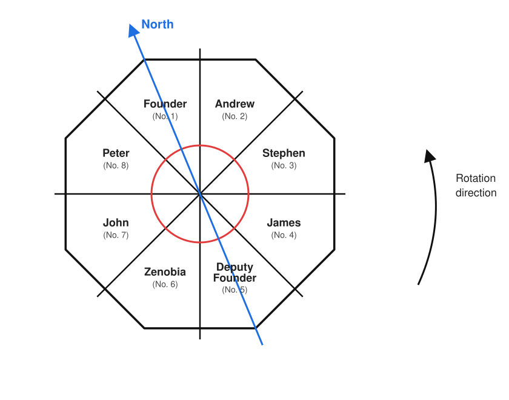
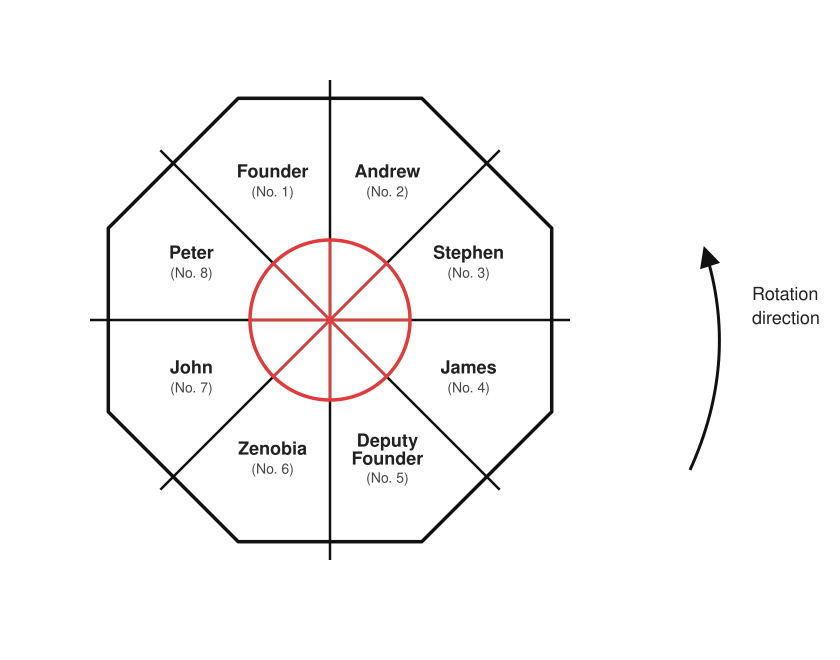
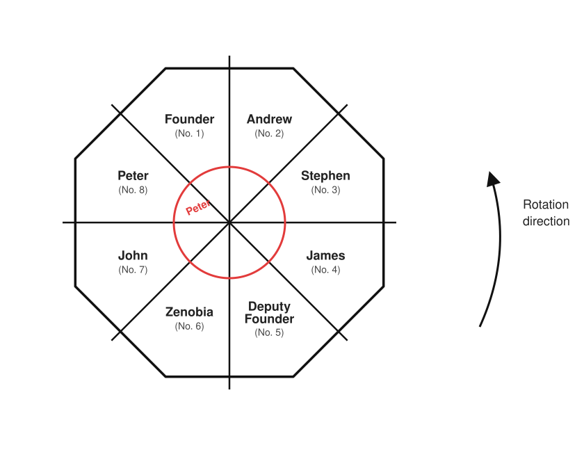
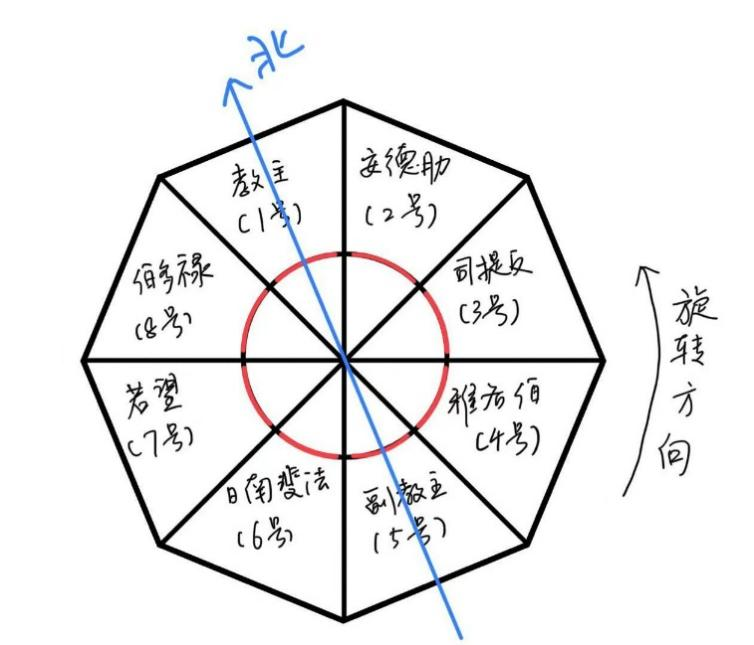
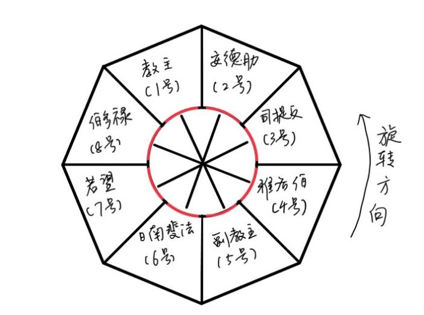
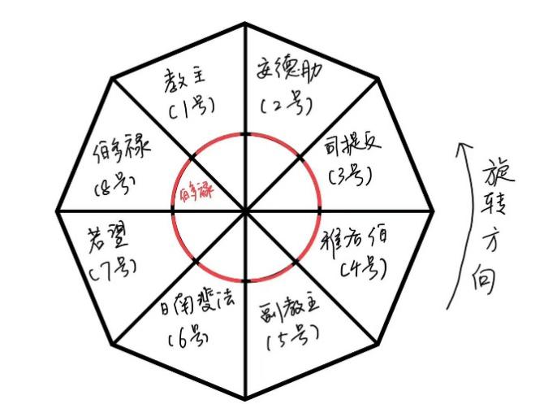

The Founder’s Journal
The Whirlpool House — were it not for that one small flaw, she would have been my masterpiece.
Founding the “Whirlpool Sect,” gathering the faithful, amassing their money, savoring wealth and glory: this is the most successful thing I have accomplished in my life thus far. None of it would have been possible without this octagonal-prism building I so painstakingly designed and built — the Whirlpool House. To be blunt, she exists to execute “sinners.” I call them sinners, but that is merely a tale for the ignorant believers to swallow. One has only to announce, with great solemnity, that on such-and-such a day at such-and-such an hour the fire of chastisement will descend upon the room where a sinner dwells — and when at last this “miracle” comes true, every one of them trembles like a frightened hen, then joins in reviling the sinner’s shamefulness, and in the end prostrates themselves at my feet as ever before.
This time the Whirlpool House welcomed several guests once more. Besides myself, there are seven people. One is the Deputy Founder, my loyal and capable lieutenant — though of course he has never known my secret. There is another whom I have already resolved to make the unlucky sacrifice: his faith in the Whirlpool Sect seems to have wavered of late, and certain of his behaviors even make me suspect he is an undercover informant for the police. I have made my arrangements; I intend to be rid of him here. The others are, by and large, believers foolish to the bone, and should pose no trouble — one of them is even a mentally disabled child, brought along by his mother, who devoutly believes the “Whirlpool House” can restore her son’s mind.
This afternoon, once everyone had arrived one after another, I gathered them in my room and trotted out the same old refrain once more:
“The Whirlpool House — this building, which revolves ceaselessly counterclockwise in a cycle of twenty-four hours, gathers all the power of every ‘whirlpool’ between heaven and earth, to cleanse Her faithful of original sin.”
In front of them all, I took up the device that controls the building’s rotation and entered the passcode known to me alone. I noticed that the Deputy Founder’s odious gaze was once again hovering around my arm; he seems lately to have grown very interested in this device. I could not possibly let him learn the passcode.
“There’s a question I’ve long wished to ask,” the Deputy Founder suddenly said before everyone. “You always seem to dress so meticulously… even in this season, long sleeves and long trousers, and even the collar buttons of your shirt are both done up—”
“To leave no flesh exposed is the most basic reverence toward the god; this is written quite clearly in the doctrine, and you should not ask such a question,” I replied coldly. “‘To bare the body is a grievous sin; save when bathing, a believer of the Whirlpool Sect should at all times be clad in garments that cover the whole body.’ This is the seventh article of the doctrine. As Founder, I must of course set the example.”
Watching those benighted believers begin, then and there, to inspect their own attire one after another, fastening tight the buttons at collar and cuff, I could not help feeling a flash of amusement.
“Next I shall take you into the Confessional. But first you must remember what I say: only while the ‘Whirlpool House’ has ceased to revolve may you enter the Confessional. And when it ceases to revolve is the will of the god, conveyed to you through me.” I shook the device in my hand. “At all other times, even should you wish to enter, you are fated to be unable to push the door open — this is the miracle. The rotation has now stopped; let me first show you the Confessional.”
I pushed open the inner door. Within was a narrow compartment partitioned off by two walls. The crowd pressed at the doorway, peering inside.
“You may come in and look,” I said.
A furtive, shifty-eyed believer came in and looked all around. First he stroked the inner door.
“How smooth — and slightly curved, too. Is this door made of gold?”
“It is bronze,” I said, forcing up a smile. “The outer door as well. I am fond of the noble feel peculiar to metal.”
The disabled child’s mother came in with her neck drawn down, looked around once, then lifted her head to gaze upward and cried out softly: “That is — the Holy Stone!”
Everyone looked up. There, at the apex of the dome some seven or eight meters overhead, was set a vast circular pane of glass — by any reckoning, no different from an ordinary skylight. These believers truly are easy to fool.
The furtive man from before sidled up to the wall and stood on tiptoe to look:
“These Confessional walls seem to be only a little over three meters high,” he said, his eyeballs rolling. “From the Holy Stone down to the top of the walls, what a great empty space.”
“It is precisely so that those who confess may bathe fully in the holy light,” the Deputy Founder explained on my behalf. “If the walls were built all the way up to the dome, the light would be greatly diminished.”
The mother hurriedly began to pray with her eyes shut. Suppressing the impatience in my heart, I patted her gently:
“The sky is overcast today; the holy light is not strong enough—”
At that moment the old grandfather clock in my room began to sound, and everyone held their breath. I waited patiently until the six chimes had finished, then spoke:
“Remember, you may confess only during the times the god permits; whoever breaks this rule is a sinner, and sooner or later will be devoured by the fire the god sends down. Furthermore, I would have all of you keep the inner door locked of your own accord at ordinary times — this gesture is a way of declaring your heart’s sincerity to the god.”
With that, I drove everyone out of the Confessional, drew the door shut behind me, then took up the device, entered a string of passcode, and afterward set it back in its old place atop the grandfather clock — and so, before them all, the “rotation” of the Whirlpool House was set in motion once more.
I saw the believers out the door and watched them return. At that moment my room’s door faced due north; the sun in the western sky was slowly sinking, and once it had set, the Southern Cross would again be visible in the night sky. Back in my room, I shut the door and, as always, turned the lock twice round to be sure it was bolted. Then I read at my desk for several hours. When darkness fell, I stripped off my clothes, put out the light, and went to bed. Outside it was still raining, as it had been for days on end.
As for what comes after — let it proceed according to plan.

What “Peter” Witnessed
I have always loved to fall asleep to the sound of rain, yet tonight, lying in bed, sleep was long in coming.
I sensed the restlessness within me, as though I had been faintly worrying over something all along, a feeling like a thorn in my back. I yearned for the salvation of the god of the “Whirlpool.” During those few short minutes of viewing after supper today, I had only managed a glimpse of the Confessional’s appearance before the Founder quickly shut the door. To be honest, I had not forgotten the Founder’s warning, but back in my own room I still secretly tried to push at the inner door — and sure enough, it did not budge in the slightest. I drew back at once, inwardly confessing my irreverence to the god while reverently locking the door, my faith in the power of the miracle deepening all the more.
But at this moment I felt a distinct throbbing within my breast, an indescribable force that seemed to guide me, to urge me to try once more — to open that door. Trembling, I climbed out of bed and walked toward the door that led to the Confessional.
My fingers touched the metal of the inner door, its patterning intricate and exquisite. I summoned my courage and pushed. The door opened soundlessly.
This was a miracle! If the Founder’s prohibition was the will of the god, and my earlier failed attempt was also the will of the god, then now, with this miraculous door opening once again, I believe this too is surely the will of the god!
Inside the door was the Confessional, no different from the one I had seen in the Founder’s room by day.
I entered the Confessional and gently closed the door behind me. Out of habit I went to lock it, only to find that the inner door had no lock on the Confessional side. I lifted my head and bathed in the clear, cold moonlight, which, purified by the Holy Stone, became holy light. Just then a faint chiming reached my ears; I knew it came from the grandfather clock in the Founder’s room.
“Dong — dong — dong — dong — dong — dong — dong — dong — dong —”
To the back-and-forth of the chimes, I devoutly closed both eyes, lifted my chin slightly, and sat down upon the floor in the holy light to begin my confession.
Slowly I opened my eyes in the moonlight. To be honest, I cannot quite say whether, through all that time, I had been in a state of meditation or had simply fallen asleep sitting up. Each time I think on this question, a trace of doubt about the Whirlpool Sect’s confession ritual rises in my heart. Sometimes there is no use thinking too much, so I simply tell myself that even just to bathe in the holy light for so long is enough to wash away sin.
I tried to rise and found my legs had gone somewhat numb. Bracing against the wall, I lifted my left wrist and glanced at my watch: 23:56. Had so much time really passed? I pushed open the door by which I had come and found the moonlight gathered upon it, where an oval halo of light appeared; I knew this too was a miracle.
The door opened and shut in silence, and in silence I returned to my room and fastened the lock. The room was pitch dark, and now I felt not the slightest drowsiness — very likely I really had been asleep for nearly three hours just now — so I decided to step outside for a breath of air.
The outer door had the same smooth feel. I stroked the patterning upon it, simpler than that of the inner door. I twisted the lock — a crisp click — and pushed the door open.
Outside the door was a scene of tranquil harmony. The Whirlpool House stands deep within a forest; the Founder says this is to make heaven and man one body. I walked toward the north. Not far from the north side of the House lay a river, its surface broad, perhaps fifty meters wide. The water flowed quietly, and the ripples that now and then rose upon it glinted in the moonlight. All around, moreover, stood trees high enough to pierce the heavens, their outlines etched by fine, dense needles, black and forbidding against the curtain of night — the sight of them made my skin crawl a little. Still, the outdoor air was fresher, after all; I drew a deep breath, left the door ajar behind me, and walked into the grass. Twelve crisp chimes sounded from within the Whirlpool House, and I knew it was now the next day.
The rain seemed to have stopped for some while; dampness hung in the air. A wind came blowing through the forest — strong, yet quite pleasant. Before I knew it, I had walked to the bank of that east–west-running river. I crouched down and put my hand in; the water by the bank was not deep, so I took off my shoes and slowly lowered both feet into the water. The water was bitingly clear, only the current was a little faster than I had thought. I relaxed my calves and let them sway to the right with the flow.
Bored, I let my gaze drift with the current, then suddenly looked up and saw the moon again within my view. There it hung, in the eastern part of that patch of sky before me. Compared with the sight I had seen in the Confessional earlier, the bright moon I now beheld was larger and brighter.
Suddenly a noise came from somewhere. I looked toward the far bank some tens of meters away and saw a black shape. By the moonlight I made out what it was — a bear. It had never occurred to me that there might be bears here, but the scene before me could not be denied by any means: this was a bear. Its huge body had halted at the bank, and for a few moments I seemed to see the cold glint reflected in its small eyes. A shiver ran through me, but with a whole river between us, I was, after all, not yet thrown into a panic.
The bear stretched its head toward the river water at the bank, its nose seeming to touch the surface, then its left forepaw reached into the water and pawed at it once. It hesitated a good while, then tried again with the other paw, as though gauging the depth of the water. At last it slowly immersed its entire upper body in the water, then leapt bodily into the river, with a “splash.” Very soon a black shape rose in the river — the bear’s head; it thrashed its body and swam straight toward where I was.
It had never occurred to me that a bear could swim, nor could I make out what it meant to do by crossing to my bank — would it attack a person? There was no time to ponder these things; instinct drove me to flee for my life. In a fluster I pulled on my shoes, rose, and backed away. By now the bear was almost to this side, more and more of its body emerging above the water. I paid it no mind, turned my head, and ran. Circling halfway around the Whirlpool House, I finally found my room — the metal patterning on the door forming the two characters “No. 8.” I shoved hard, only to find the outer door shut fast; very likely the wind had blown it closed on its own. By great good fortune, I had brought my key when I went out. Bracing against the door, I hurriedly dug the key from my coat pocket, jabbed it into the keyhole, and turned with all my might. The door opened; I darted into the room and slammed the door hard behind me. While my heart was still pounding, I heard the beast scratching at the door outside, followed by waves of howling, furious and helpless.
I glanced at my watch: the time I had spent outside already came to half an hour. I pressed myself against the back of the door, listening carefully to the beast’s movements; it seemed to circle nearby a while longer. Once I was sure the sounds had gone, I got into bed and wrapped my whole body in the quilt.
Before long, I entered the land of dreams once more.
I had not slept long when I was awakened again by a knocking at the door. It was about eight in the morning; the Deputy Founder stood at the doorway, and outside it was raining again.
“Something has happened to the Founder.”
Twenty minutes later, I and several others had gathered in the Deputy Founder’s room. The Deputy Founder said that every morning, while it was still dark, the Founder would come to his room to perform the blessing ritual over the “holy water.” The “holy water” was ordinarily kept in the Deputy Founder’s room; once the blessing was done, the Founder would then enter each believer’s room in turn, to sprinkle the blessed holy water upon them. This morning the Deputy Founder waited a long while and the Founder did not come, so he went to the Founder’s door to look for him; he knocked for a long time with no answer, and so used the spare key to open the door — only to find the Founder upon the bed, beheaded.
A man — in the church we call him “Stephen” — proposed that everyone should go together to look at the scene. The others agreed, and the Deputy Founder did not refuse either.
The state of the scene was much as the Deputy Founder had described. The Founder lay there upon the bed, his head and body already separated. On the floor between the bed and the inner door lay flung an axe. “Stephen” stepped forward and lifted the quilt to examine the corpse. There were no other external wounds upon the Founder’s body; it appeared his life had been neatly ended with a single stroke of the axe. Moreover, the body was clad in pajamas; the Deputy Founder said they were indeed the ones he usually wore. The clothing was very neat, with no signs of a struggle. There was a good deal of blood at the scene: besides the pillow, which was covered in spattered blood, the carpet around where the axe had fallen was also stained with large patches of red.
The Deputy Founder gave a startled cry and stepped close to the grandfather clock:
“That device… the device that controls the rotation of the Whirlpool House is gone! The Founder always kept it here.”
We pressed close as well; atop the grandfather clock lay a layer of dust, and within it there was indeed a rectangular imprint, indicating that something had once rested there for a long time.

Although everyone found the Founder’s death hard to believe, seeing is believing; the Deputy Founder said his death was a summoning-back by the deity, and so everyone could only sigh in grief.
“Look upon the Founder’s solemn aspect… though he has ascended to heaven, the true essence of the Whirlpool Sect must still be carried on by us all,” the Deputy Founder said gravely. “Henceforth I shall shoulder the Founder’s heavy charge; I ask that you all place your trust in me.”
Afterward, under the Deputy Founder’s guidance, we went to Room No. 5.
I noticed a pot upon the table in the room, deep red all over, with a very long spout, as well as a handle and a lid. I drew near the table, wishing to examine it closely, but the Deputy Founder reached out a hand to block me.
“What this holds is the holy water I told you of,” he said drily. “Were the Founder still here, he ought now to be blessing you all himself.”
“Then what exactly is this holy water?” asked the man named “James.” “Might you demonstrate for us how the blessing is sprinkled? Let it make up for the Founder’s lost opportunity. Many of the newcomers are at the Whirlpool House for the first time and have never witnessed this ritual.”
The Deputy Founder thought it over and was not too resistant to the suggestion. Pinching the pot’s handle in one hand, he lifted the pot, paced a few rounds about the room reciting scripture, then suddenly halted, pressed his thumb against the lid, tilted the pot, and a stream of liquid poured out from the spout. It fell upon the carpet. At this moment “James” lunged forward in a single stride, bent low, cupped both hands into the shape of a bowl, and caught the holy water as it cascaded down.
“What are you doing?” Before the Deputy Founder had finished speaking, “James” had already brought his nose close to the holy water and given it a quick sniff, then stuck out his tongue and licked it, and thereupon, before everyone’s eyes, drained the holy water in his palms in one gulp.
Everyone let out a cry of alarm. The Deputy Founder put the pot away and regarded “James” with disgust, uttering a few words of intimidation. Faced with this kind of extreme religious fervor, he could probably do no more than rebuke him verbally. Thinking of this, I prayed once again that my own secret entry into the Confessional would not be discovered.
“My child! My child!” “Zenobia,” that mother, suddenly erupted into a fit of shrieking. “He seems… to have been gone this whole time!”
Only now did everyone realize that the dim-witted child “John” had been absent from the scene all along.
“Could it be that he killed the Founder?!” “James” cried out.
“Andrew is missing too!” I said.
“Go quickly and check their rooms!” the Deputy Founder commanded.
While the crowd was in disarray, I drew “James” aside and asked him in a low voice: “What does the holy water actually taste like?”
“No taste at all, just like water,” he said, winking at me.
The door of “Andrew’s” room stood wide open, and the scene within was too horrible to look at. Upon the snow-white bedsheet lay the one and only thing there: “Andrew’s” body, mangled out of human shape. The torso was covered all over with bite and tearing marks; the chest and belly had been ripped open, with scarcely any organs left within; the limbs were nearly all dismembered — the left arm especially, the whole forearm torn off and vanished without a trace — and the head, too, was severed from the neck. The quilt had fallen to the floor by the bed in a heap. Both the bedsheet and the quilt were spotted with bloodstains.
It could only have been a beast — a ferocious beast had killed him. I thought of my encounter the night before: had that bear, which failed to catch me, broken into “Andrew’s” room and devoured him whole? Even as I shuddered with afterfright, I prayed for this pitiable soul before me.
“The glasses are still here.” “James” walked over to the round table and picked up a pair of thick-lensed glasses. “Andrew” was severely nearsighted.
“The situation is quite clear: a beast from nearby killed him,” the Deputy Founder said, stepping forward and speaking slowly. “This poor man… very likely forgot to lock his door at night.”
“Wait… could it be,” “James” said, standing by the bed, “that the manner of his death — do none of you find it strange?”
“Where is the problem?” The Deputy Founder’s face was taut.
“It’s the clothing,” he answered. “The body has been gnawed to such a state, yet not even a scrap of torn cloth can be found upon it. This means he wore no pajamas at all when he slept — which violates the seventh article of the doctrine! In other words, ‘Andrew’ was no devout believer at all!”
“He deserved to die!” I led the cry, and everyone’s emotions instantly surged — we could not tolerate that such an impure person had been lurking among us.
“Even if he was eaten by a beast, it was because he would not accept the doctrine, and so the god sent down heaven’s punishment upon him!”
“And my child? Could he also have…” That devout mother began to shriek once more.
Everyone then went to the doorway of Room No. 7.
“I have the spare key,” the Deputy Founder said, producing a ring of keys and deftly opening the door. “John’s” mother, “Zenobia,” was the first to enter the room, calling her child’s name while searching for him throughout that none-too-large space. But anyone with eyes could see that there was simply nowhere in this room that could conceal a person.
“That child… his mind has never been quite clear; he must have been possessed by a demon,” “Zenobia” began to sob. “Whether hungry or thirsty, he never once calls out… When he was little, he once played hide-and-seek with me and shut himself in the storeroom; search as I might, I could not find him, and in the end even crying out for him to come out did no good… At the time I thought he was merely being mischievous; only later, after seeing a doctor, did I learn that there are times he simply cannot be aware of his own situation… Now, even if he has truly wandered off or hidden somewhere, we could shout our throats raw and still never call him out.”
“Madam, do not despair just yet.” “James” patted the mother on the shoulder. “Perhaps, just as you say, he really is playing hide-and-seek with you — look, isn’t there still one place in this room that has not been searched?”
He meant the Confessional; I think everyone understood. Yet no one dared, before everyone, to demand entry into the Confessional — that would be a violation of the god’s will.
Amid everyone’s silence, the distant clock chimed nine times — nine in the morning had come. No sooner had the chiming ended than, to everyone’s surprise, “Stephen” lunged forward in a single stride and seized the Deputy Founder by the collar: “A human life is at stake — quickly, let us into the Confessional to search!”
“But… for that we would have to stop the Whirlpool House’s rotation!” The Deputy Founder looked utterly helpless. “The device has been taken by who knows whom; and even if it were still here… the device’s passcode is unknown even to me.”
“Is there truly no way, then?!” The despairing “Zenobia,” murmuring words of prayer and blessing, gripped the door handle and rammed at it with all her might — and the door duly swung open. For the first few seconds, everyone was struck dumb; then, with “Zenobia” leading, everyone cried out together: “A miracle!” Even the Deputy Founder muttered to himself:
“How could this be…”
Yet the sight within the narrow Confessional was even more plain to see: here there were only two bare walls, and the suspended ceiling high above. “Stephen” looked all around and gauged the height of the walls with a gesture:
“About three and a half meters, and the walls are so smooth — by human strength alone, surely no one could climb over into the neighboring Confessional.”
That mother, eyes brimming with tears, nodded silently, as though she had accepted the fact that her child was no longer within this building.
“If there is nothing more, everyone had best come out,” the Deputy Founder said. And so I, “Stephen,” and “Zenobia” filed out of the Confessional one after another. I was the last to come out; as I did, I drew the door shut and fastened the lock for good measure.
“So who in the end killed the Founder?” asked “Andrew,” after we had gathered once again in the Deputy Founder’s Room No. 5.
The Deputy Founder pressed his lips together and gave a slight shake of his head: “I fear that I, for now, cannot provide an answer either.”
“But you said the door was locked at the time, did you not?” “Stephen” raised his hand. “If that is truly so, is this not a locked-room murder?”
“You cannot put it that way.” The Deputy Founder’s expression was grave. “When I opened the door, it was not in a bolted state — otherwise I could not have opened it with the spare key… It is entirely possible that someone entered the room and killed the Founder.”
“But surely the Founder would bolt his door when he slept at night? And how do you explain ‘John’s’ disappearance?” he pressed relentlessly.
“You mean to slander my child?” “Zenobia” cried. “He cannot even look after himself — how could he possibly kill anyone?”
“That is not at all what I meant.” “Stephen” hastily and awkwardly waved his hands.
What followed was the woman’s hysterical roaring. The Deputy Founder hurriedly brought the situation under control.
“In any case, let everyone first calm down. Next, I shall organize us into teams of several to search the nearby woods. Perhaps ‘John’ has merely happened to wander off somewhere near here. Also, there are beasts roaming about these parts, so everyone must take the greatest care while searching.”
“What did you say?” “Zenobia” opened her eyes wide, as though only now realizing something.
The Deputy Founder nodded, staring incredulously at her face.
“My child… the thing he fears most of all is those ferocious animals… Even if he was not eaten by a beast, the mere sight of one would surely send him into hiding for dear life—”
I was put in a group with “James,” chiefly responsible for the eastern region of the Whirlpool House; yet after several hours of shouting in the pouring rain, we came up with nothing in the end. When we returned to the Whirlpool House, the other three were likewise exhausted, and had likewise found no sign of “John” or “Andrew.” So we agreed to first take lunch in the Deputy Founder’s room. The pad of the Deputy Founder’s right thumb had been scratched by pine needles in the woods, and when he held his table knife, he had to deliberately cock the thumb up for fear of the pain; though I felt for him, it did look somewhat comical to watch. After the meal, the five of us each returned to our rooms to rest.
At 14:43, the Deputy Founder knocked at my door and I asked his purpose. He shook the red pot in his hand at me.
“The Founder is gone, and I keep thinking that, as Deputy Founder, there is something I can do for everyone. I recall the Founder once told me that the holy-water sprinkling ritual must be performed once a day, before sunrise. The incantation for the blessing ritual I learned long ago; I have just now performed the blessing over it, and now let me sprinkle it for you all.”
I respectfully welcomed him in. He paced a few rounds in the center of the room, much as he had this morning, then, hugging the wall, began to sprinkle the holy water, sprinkling as he advanced, going once around all four walls of the room. I noticed his thumb was still cocked up, while the remaining four fingers held firmly to the end of the pot’s handle.
The whole ritual took two or three minutes; when it was over we bowed to each other, and he took his leave, saying he should next go to “Stephen’s” room next door. After he left, I locked the door securely, confirmed that no one was at the window, then lay prone on the ground and sniffed at the smell of the holy water. Upon the thick carpet, the damp traces of the holy water had not yet dispersed; I pressed my nose to the floor and greedily breathed in its odor — a faint sweetness, but… more like the smell of gasoline I had smelled as a child in my uncle’s factory. At this I knew “James” had been lying to me this morning: having alone been first to taste the holy water, he had lied to me that it was “just like water” — truly not loyal enough.
After a while, the unbroken gloom and rain outside the window finally ceased, and very soon the sun rose instead, shining through the glass window and warming the room. Wearied by the whole morning, my body now flooded irresistibly with drowsiness, and I took a nap of about half an hour upon the bed, only to be startled awake at last by a knocking at the door. I got out of bed and braced one hand against the wall, meaning to change my shoes; the knocking at my ear grew louder still. I pulled the door open — it was the Deputy Founder, who led me to the doorway of Room No. 3.
Room No. 3 is “Stephen’s” room; at this moment the Deputy Founder and “James” were also outside the door of this room. From within the door came a series of “bang, bang, bang” sounds; the person inside seemed to be ramming the door ceaselessly. We looked at one another, none of us knowing what the situation was.
“We can only hear the sound of someone hitting the door; we’ve called out his name and he doesn’t answer. We don’t know what has happened,” “James” explained.
“Can the door be opened?” I said, and tried to step forward and push at the door, but my fingers met a stab of pain — it was a scorching heat.
“We’ve tried the key too; it won’t open from outside. It seems to have been bolted from within.” The Deputy Founder shrugged, and “James” nodded in agreement.
As we spoke, we all saw a scene suddenly unfold before our eyes: the small window to the right of the door, over which a curtain had originally been drawn, now — through the glass — that corner of the brown curtain cloth began to curl, blacken, and then rapidly shrivel, and leaping flames at once climbed up it. We all understood at once what was happening inside — it was a fire.
“Save him, quick!” “James” cried out, and then made to break the window, but plainly a fist could not smash the glass. He snatched up a stone from the ground nearby and hurled it with all his strength; the window broke a hole. He pounded a few more times with his fist, but the back of his hand was soon cut and bleeding by the shards of glass. The Deputy Founder stepped up and pulled him back, saying, “Let me.” Thereupon, from somewhere he produced a cloth of white and green, wrapped it about his hand and forearm, and quickly enlarged the small hole somewhat, then reached his arm in, as though trying to reach the lock on the inside of the door. Presently two “click” sounds came from the door lock.
“It’s open!” the Deputy Founder cried; but his hand suddenly jerked, he shouted “So hot!” and at once withdrew his arm. The cloth wrapped about his arm fell off inside as well. He returned to the door, tremblingly drew out the key, inserted it into the keyhole — only to find it still would not open.
“Let me try!” I shoved him aside and twisted the key with all my strength, but still it would not turn.
“Call the fire brigade, quick!” Before “James” had finished speaking, sirens were already sounding all around.
Work Log
Case No.: 1983711772 Date: January 18th
I am accustomed to writing my work log on electronic devices, but here all devices have been confiscated, so I use pen and paper.
I have been embedded in the “Whirlpool Sect” for one year and three months; as of yesterday (the 17th) I have at last gained entry to the “Whirlpool House.” Below I record my recent work in chronological order.
Yesterday I spent most of the day traveling, arriving at the House around 17:30; afterward I assembled in the “Founder’s” room, where he took us to view the Confessional and introduced certain rules. Back in my room I tried to push open the inner door without success; the principle is unclear for now, but I conjecture there is some sort of device within the House controlling the opening and closing of the inner doors.
In the night I lay resting through the first half of the night, but slept poorly; my cold has been very bad lately and my rhinitis has flared up again, my nose so stuffed I could not breathe. At 2:59 I began to act. I opened the door, keeping careful watch to lock it at all times. Reaching the doorway of Room No. 1, where the “Founder” was, I confirmed no one was about, then skillfully used a silent tool to cut a perfectly round hole ten centimeters in diameter in the glass window beside the door; I then reached my arm in, successfully touched the knob on the inside of the outer door, turned it one full revolution clockwise, and successfully opened the door. The whole process, as always, took five minutes.
The room was very quiet; apart from a faint anomalous sound coming from the depths of the room as I entered, almost all that could be heard was the “shh-shh” of the grandfather clock’s second hand and the sound of the light rain outside the window. The “Founder” had certainly not woken. I too kept my movements to a minimum, feeling my way forward in the dark. Having memorized the room’s layout, I successfully skirted the two obstacles (the square table and the round table), though near the bed I tripped over some handle-shaped object on the floor; fortunately the floor was carpeted and my reactions were quick, so I did not wake the person in the room.
Afterward I successfully reached the grandfather clock, and atop it felt the target object (the control device). I recalled the noise I had heard at the start, and suspected someone was hiding nearby, so I checked all around the inner door — nothing amiss. I then tried again to push the inner door, and again it could not be pushed open. So I returned by the way I had come, this time avoiding the obstacle on the floor. Once outside the room, I restored the door entirely to its previous state, and fitted back the pane of glass I had earlier cut out, so that it would look as inconspicuous as possible.
Worth recording: at this point I spotted a black shape in the forest not far off, of the height of an adult human; I watched it for a few seconds and it soon ran off. It may be wildlife roaming the vicinity.
I returned to my room at 3:35; the thing I had obtained I hid in the safe I had brought with me. Nothing further occurred afterward.
At 8:23 in the morning, I and several others were gathered by the “Deputy Founder” at the doorway of Room No. 1; the Deputy Founder opened the door before everyone with the spare key, and the “Founder” inside was already dead. I took the chance to survey the scene: the body was beheaded, and I confirmed the murder weapon was the axe on the floor. But the murder was a sudden, unforeseen event, not the chief purpose of this mission, so I omit any account of the scene here. According to intelligence, the important objective of this trip (the controller’s passcode) ought to be printed on the “Founder’s” left arm, so I secretly drew back his sleeve — and sure enough, there was a string of digits upon it. I memorized the passcode.
Later everyone discovered the death of “Andrew” and the disappearance of “John”; the former apparently suffered a beast attack, and the morning was spent chiefly searching for the latter, without result. Of note: while we were searching in “John’s” room, the inner door was actually opened successfully — yet at that time I had not used the controller to stop the rotation of the Whirlpool House. Later we searched for the person in the nearby forest, and by the time we returned it was about half past one in the afternoon. After finishing the meal, at 14:50 the “Deputy Founder” came into my room to perform the “holy-water sprinkling” ritual. After he left I bolted the door, took the device from the safe, and entered the passcode — so the Whirlpool House’s rotation should now be able to stop.
It is now 15:04; the sky has been clear for a while and the room is growing hotter and hotter. I had meant to step outside for some air, but suddenly heard a scream coming from the direction of the Confessional.
What “Andrew” Witnessed
This wretched House has nowhere to relieve oneself, as I only realized when I woke in the middle of the night with a stomachache.
It seemed I could only see to it outside. I left the door ajar — otherwise I’d need to bring the key, and the pajamas I had on had no pockets. Where to go? The clearing by the door clearly wouldn’t do; I had no wish to be interrogated when my droppings were discovered in the morning. The woods meant walking a few extra steps, but were at least more concealed.
I found a spot in the woods and squatted down; the ground was utterly muddy, all the fault of that endless rain — luckily it had stopped for now. There must have been something wrong with supper; now my lower belly ached so fiercely. That meal was supposedly made by the Deputy Founder; I heard he used to be a cook, but evidently he’s nothing to speak of, unable even to manage the quality of the ingredients. Ceaselessly I cursed him in my heart.
I squatted for nearly twenty minutes, the cramping coming in waves, seemingly with no end. The wind blew until I shivered, which only worsened the pain. I regretted having come out in nothing but a single layer of pajamas — or rather, these pajamas were simply my evil star: they always remind me of my brush with death at Auschwitz.1 I truly do not know how I came to bring them to the Whirlpool House. I squatted nearly another ten minutes, until at last my legs went numb, before I could finally be sure my belly would ache no more.
I rose, ready to make my way back through the woods to my room. A rustling sound came, and the next instant my heart froze. A huge black shape stood there, behind a tree barely five meters from me. I wanted to look closely, but only then realized I had left my glasses in the room, so I squinted hard. A bear — my eyes told me this was a bear, yet by anything I knew, I could in no way understand why such a creature should appear in this godforsaken place. Would it attack me? Instinct drove me to freeze in place, motionless.
The thing saw me, its sly eyes fixed upon me, but its body did not move for a long while. Only then did I try to retreat bit by bit; confirming it still had not moved, I quickened my pace, and at last suddenly took to my heels. On the way I took a fall, my teeth biting through my lower lip, my nose smarting from the blow as well; but I paid these no mind, scrambled up again, and bolted back to the vicinity of the Whirlpool House, in utter disarray.
The bearings of the rooms and such I had never managed to remember. I recalled that the building revolves, and after squatting half an hour, its position had surely long since changed. So I searched along the counterclockwise direction, groping my way to the door I had earlier left ajar. I locked the door; a crisp “click” came. Gazing out the window, having confirmed that black thing had not followed, I felt my way by instinct to the bedside and threw myself headlong into the warm bedding. Just then I had the feeling that a faint, barely-there smell of blood pervaded the air around me, but I was too sleepy, so I told myself it was probably some problem my nose had taken from the fall and not worth minding. As the pounding of my heart gradually faded, drowsiness soon swept over me; I tried to ignore that uncomfortable smell and forced myself to fall asleep once more.
Police Investigation Report
On January 18th at 15:30, the police lying in wait around the “Whirlpool House” detected a fire within the House and quickly arrived at the scene. At the scene, Room No. 3 was ablaze. After the fire brigade reached the scene, they entered by breaking a window, successfully extinguished the fire, and, once the residual heat at the scene had dissipated, carried out clearing and survey operations. There were two bodies at the scene, both fallen 20–30 cm from the inside of the outer door, namely those bearing the church names “Stephen” and “John.” The bodies bore extensive burns, but the cause of death in both cases was excessive inhalation of dense smoke, so the majority of the injuries were post-mortem. The bodies bore no other external wounds or special marks. Judging by the degree of charring, the point of origin of the fire was on the carpet, at a position about 20 cm from the inner door. Furthermore, the burns on the right palm of “John’s” body were markedly more severe than on the left hand. A safe was also found in the room, containing a black rectangular object which, according to the witnesses, is the device that controls the rotation of the Whirlpool House; in addition, a work log was found. The outer door had been bolted from the inside (that is, turned twice counterclockwise); once the room’s fire lock had been released, the door opened normally. Upon disassembly, it was found that the outer door possessed certain special structures: one, the top door frame and the top of the door leaf were of an unusual form (as shown in Fig. 3); and one, within each of the room’s two side walls was found a layer of copper plate, wrapped on the outside with a layer of heat-insulating, fire-resistant material.

Other investigative clues regarding the Whirlpool House:
- When the police arrived at the scene, the Whirlpool House was still in a state of rotation;
- Each room of the Whirlpool House has only one spare key for its door lock, all of which are on the “Deputy Founder’s” person; apart from this there is no other way to open the doors. This set of spare keys has always been on the “Deputy Founder’s” own person, and has never passed into anyone else’s hands;
- Regarding the red pot that holds the “holy water,” it was found to have a small hole at the lid and at the end of the handle respectively; on surveying its internal structure, it is in fact a puzzle pot (a “return-to-center” pot);
- There exists no such thing as a remote-control device capable of locking the inner door;
- As for the clues concerning Room No. 1, these are essentially covered by “Peter’s” account; in addition, the police found that the back of the pajamas on the body was also stained with a certain amount of blood;
- The time on the grandfather clock within the Whirlpool House is at all times consistent with the local mean time.
The testimony of “James”:
Police: Were you the first to discover the anomaly in “Stephen’s” room?
James: No, I would say I discovered it together with the Deputy Founder.
Police: Can you describe the process of the discovery?
James: All right. It was about three in the afternoon. The Deputy Founder had just finished sprinkling holy water for us, and I was in my room writing a novel… you know, I’m fond of writing a bit of — um — detective fiction in my spare time. But I soon found I couldn’t settle down… I tried touching the wall against which the head of my bed rested and found it rather hot. Then from the room next door — yes, the one that caught fire — there seemed to come the sound of someone ramming the door with their body. I went out and just then saw the Deputy Founder hurrying over too. We called out to “Stephen,” and he didn’t speak. The Deputy Founder used the key to open the door and found it wouldn’t turn. I tried too, and it was the same — no use. Later “Peter” came as well, and the Deputy Founder and I broke the window together, but the door lock still wouldn’t open, so we called you in.
Police: All right, thank you. We hear you’ve been in the sect a long time and were close to the Founder. Could you describe the scene when you all discovered Room No. 1?
James: That’s right, I was indeed quite close to the Founder. But there’s really nothing to say about the scene — it was just as you saw it. He lay there, dressed in pajamas, solemn as ever, only his neck severed in a single stroke — oh no, it should be a single stroke of the axe… a pool of blood on the floor. I do recall that fellow called “Stephen” was clumsy and ham-handed; he moved a lot of things — you people would call that “disturbing the scene,” wouldn’t you?
Police: You needn’t concern yourself with that… Also, according to our investigation, this is not the first time the Whirlpool House has caught fire, is it? And as a believer, you must have witnessed the so-called “judgments” before; could you describe one for us?
James: I have indeed seen it a few times. Generally it’s not long after daybreak that a room suddenly bursts into flame, and by the time we go in, the sinner has long since been burned to death. Strangely enough, it always seems to be Room No. 3 that catches fire, and from the look of the blaze at the scene, it always seems to start from the side of the inner door… Probably the sinners had all tried to slip into the Confessional, and in the end were instead burned to death by the fire that issued from within the Confessional — isn’t that quite ironic?
教主の手記
渦巻館——あの小さな瑕疵さえなければ、彼女は私の会心の傑作となっていただろう。
“渦巻教”を創設し、信徒を集め、財を蓄え、栄華を享受する。これは今日までの私の人生で成し遂げた、もっとも成功した事業だ。それらすべては、私が丹精込めて設計し建てたこの八角柱形の建築“渦巻館”なしには成り立たなかった。率直に言えば、彼女は“罪人”を処刑するためにある。罪人とは言うが、しょせん無知な信徒たちに聞かせるための作り話にすぎない。もっともらしく、何月何日何時に、懲罰の火が罪人の住む部屋へ降りかかると告げておき、最後にこの“奇跡”が果たして的中したとき、彼らは皆まず鶏のように怯えおののき、続いて口々に“罪人”の恥ずべきさまを罵り、最後にはいつものように私の足元にひれ伏すのだ。
今回の渦巻館もまた、幾人かの客人を迎え入れた。私を除いて七人。一人は副教主、私の忠実で有能な腹心だ。もちろん私の秘密を、彼は一度として知らない。もう一人については、すでに彼を哀れな生贄にすると決めている。彼の渦巻教への信仰は、近ごろどうやら揺らぎ始めているらしく、いくつかの振る舞いから、私は彼が警察の潜入捜査官ではないかと疑っている。一通り手筈を整え、ここで彼を始末するつもりだ。残りの数人は、おおむね救いようのない愚かな信徒たちで、問題はあるまい。中には知的障害のある子どももいる——母親が連れてきたのだ。彼女は“渦巻館”が我が子の心を取り戻してくれると敬虔に信じている。
今日の午後、人々が次々に揃ったところで、私は彼らを自室に集め、いつもの決まり文句をまた持ち出した。
“渦巻館、この二十四時間を一周期として、反時計回りに絶えず回転する建築は、天地の間のあらゆる‘渦’の力を結集し、神のしもべから原罪を洗い清めるのだ。”
私は皆の面前で、建築の回転を操作する装置を手に取り、私一人だけが知る暗証番号を入力した。副教主のあの忌々しい視線が、再び私の腕のあたりをうろついているのに気づいた。彼は最近この装置にひどく関心を持っているようだ。むろん彼に暗証番号を知られるわけにはいかない。
“ずっとお伺いしたいことがありました。”副教主が突然、皆の前で問うた。“あなたはいつもこの一糸乱れぬ装いでいらっしゃる……この季節になっても、長袖に長ズボン、シャツの襟元のボタンまで二つとも留めて——”
“肌をあらわにせぬのは神への最も基本的な敬意だ。これは教義にはっきりと記されている。お前はそんなことを問うべきではない。”私は冷ややかに答えた。“‘身体を露出することは大いなる罪悪であり、渦巻教の信仰者は沐浴のときを除いて、常に全身を覆う衣を身につけるべし。’これが教義の第七条だ。私は教主として、当然みずから模範を示さねばならぬ。”
あの愚昧な信徒たちが、このときたちまち各自の身なりを点検し始め、襟と袖のボタンをきつく留めるのを見て、私は思わず一瞬おかしさを覚えた。
“次にお前たちを懺悔室へ案内しよう。だがまず、私の言うことを覚えておくがよい。‘渦巻館’が回転を停止しているときに限り、お前たちは懺悔室へ入ることができる。いつ回転が止まるかは神の御意志であり、私を通じてお前たちに伝えられる。”私は手にした装置を振ってみせた。“それ以外のときは、たとえ入りたいと願っても、お前たちは扉を押し開けられぬ定めだ——これこそ奇跡だ。今は回転がすでに止まっている。まず懺悔室を案内しよう。”
私は内扉を押し開けた。中は二枚の壁で仕切られた狭い小部屋だ。人々は戸口に押し寄せ、中を覗き込んだ。
“入って見てもかまわぬ。”と私は言った。
こそこそと落ち着きのない一人の信徒が入ってきて、あちこち見回した。彼はまず内扉に触れた。
“ずいぶん滑らかですね、それに少し湾曲もしている——この扉は金でできているのですか？”
“青銅製だ。”私は無理に笑みを浮かべた。“外扉もな。私は金属特有の高貴な感触が好きなのだ。”
知的障害のある子の母親が、首をすくめて入ってきた。彼女はぐるりと見回し、さらに頭を上げて見上げると、低い声で叫んだ。“あれは——聖石！”
皆が頭を上げて見ると、頭上七、八メートルの高さのドームのてっぺんに、巨大な円形のガラスがはめ込まれていた——どう見てもただの天窓と変わりはない。この信徒たちは実に騙しやすい。
先ほどのこそこそした男が壁際に寄り、爪先立って見上げた。
“この懺悔室の壁は、せいぜい三メートル余りの高さのようですね。”彼は目をぎょろつかせた。“聖石から壁のてっぺんまで、ずいぶん大きな空間がありますな。”
“まさに懺悔する者が聖光を存分に浴びられるようにするためだ。”副教主が私に代わって説明した。“もし壁をドームまで高く築けば、光がずっと少なくなってしまうのだ。”
あの母親は慌てて目を閉じ祈り始めた。私は内心の苛立ちを抑えつつ、彼女を軽く叩いた。
“今日は曇りで、聖光の強さが足りぬ——”
このとき、私の部屋にある旧式の置き時計が鳴り始め、皆は息を凝らした。私は辛抱強く、六回の鐘が鳴り終わるのを待ってから口を開いた。
“覚えておくがよい。神の許す時にのみ懺悔ができる。この規則を破る者は罪人であり、遅かれ早かれ神が降す火に呑み込まれる。さらに、皆には平素から自発的に内扉に錠を掛けておいてほしい。この所作は、神に心の誠を示すためのものだ。”
そう言い終えると、私は皆を懺悔室から追い出し、背後の扉を閉め、それから装置を手に取り、一連の暗証番号を入力し、終えると置き時計の上のあの定位置に戻した——渦巻館の“回転”が、再び皆の前で作動し始めた。
私は信徒たちを戸口まで送り、彼らが戻っていくのを見届けた。このとき私の部屋の扉は真北を向いていた。天の西の太陽がゆっくりと沈みつつあり、それが落ちきれば、夜空にまた南十字星が見えることだろう。部屋に戻ると、私は扉を閉め、いつものように錠を二回まわして、扉が確かに施錠されたのを確かめた。それから机に向かって数時間読書をした。日が暮れると、私は衣服を脱ぎ捨て、明かりを消して床に就いた。外はまだ雨が降っていた。もう何日も続けてだ。
この後のことは、計画どおりに進めるとしよう。
“ペトロ”の見聞
私はもともと雨音を聞きながら眠りにつくのが好きなのだが、今夜は寝床に横たわっても、長いこと眠気が訪れなかった。
私は内心の焦燥を感じた。まるでずっと何かをぼんやりと案じているかのような、背に棘が刺さったような感覚だ。私は“渦巻”の神の救済を渇望した。今日の夕食後、あのほんの数分の見学で、私は懺悔室の様子をちらりと見られただけで、教主はすぐに扉を閉めてしまった。正直に言えば、教主の警告を覚えていなかったわけではないが、それでも自室に戻ってから、こっそりと内扉を押してみた。やはり微動だにしなかった。私はすぐに退き、心の中で神への不敬を懺悔しながら、恭しく扉に錠を掛け、奇跡の力をいっそう深く信じた。
だがこの瞬間、私は胸の内にはっきりとした高鳴りを覚えた。言いようのない力が、私を導き、もう一度試してみよ——あの扉を開けてみよと勧めているかのようだった。私は震えながら寝床を下り、懺悔室へ通じる扉へと歩み寄った。
私の指が金属製の内扉に触れた。そこに刻まれた模様は複雑で精緻だった。私は勇気を奮い起こし、押した。扉は音もなく開いた。
これは奇跡だ！もし教主の禁令が神の意志であり、先ほどの私の試みの失敗もまた神の意志であったのなら、いまこの奇跡のような扉が再び開いたのも、きっと同じく神の意志に違いない！
扉の中は懺悔室で、昼間に教主の部屋で見たものと寸分違わなかった。
私は懺悔室に入り、そっと背後の扉を閉めた。習慣で錠を掛けようとしたが、内扉のこの懺悔室側には錠がないことに気づいた。私は頭を上げ、清らかで冷たい月光を浴びた。その月光は聖石によって浄化され、聖光となった。このとき耳元にかすかな鐘の音が届いた。それが教主の部屋にあるあの置き時計から伝わってくるのだとわかった。
“ゴーン——ゴーン——ゴーン——ゴーン——ゴーン——ゴーン——ゴーン——ゴーン——ゴーン——”
往き来する鐘の音に合わせて、私は敬虔に両目を閉じ、顎をわずかに上げ、聖光の中に座り込んで懺悔を始めた。
私は月光の中でゆっくりと目を開けた。正直なところ、これほど長い間、自分が瞑想の状態にあったのか、それともただ座ったまま眠ってしまっていたのか、はっきりとはわからない。この問いを考えるたびに、心の底で渦巻教の懺悔の儀式に対する一抹の疑念が頭をもたげる。ときには考えすぎても仕方がないので、いっそ自分にこう言い聞かせる。たとえ聖光の下にこれほど長く浴していただけでも、罪を洗い流すには十分なのだと。
立ち上がろうとして、両脚がいくらか痺れているのに気づいた。壁に手をついて、私は左の手首を持ち上げ、腕時計に目をやった。二十三時五十六分。もうそんなに時が経ったのか。私が来たときの扉を押し開けると、月光が扉の上に集まり、そこに楕円形の光の輪が浮かび上がっているのに気づいた。これもまた奇跡だとわかった。
扉は音もなく開閉し、私も音もなく部屋に戻り、錠を掛けた。部屋の中は真っ暗で、このとき私には少しの眠気もなかった——おそらく先ほどの三時間近く、本当に眠っていたのだろう——ので、外へ出て少し風に当たることにした。
外扉も同じく滑らかな感触だった。私はその上の模様を撫でた。模様は内扉より簡素だった。錠をまわすと、澄んだ音が一つ鳴り、それから扉を押し開けた。
扉の外は静かで穏やかな光景だった。渦巻館は森の奥深くに建っている。教主は天と人を一体にするためだと言う。私は北へ向かって歩いた。館の北側のほど近くに一本の川が横たわっており、川面は広く、おそらく五十メートルほどの幅があった。水は静かに流れ、時おり立つさざ波が月明かりにきらめいていた。さらに四方には、天を突くほど高い木々が囲み、細密な針葉がその輪郭を描き出し、夜の帳の中で黒々としており、見ていると少し背筋がぞっとした。それでも屋外の空気はやはり清々しく、私は深く息を吸い込み、背後の扉を半開きのまま残して、草地の中へと歩み入った。渦巻館の中から、澄んだ鐘が十二回鳴り響くのが聞こえ、もう翌日になったのだとわかった。
雨はしばらく前にやんだようで、空気には湿り気が漂っていた。林を吹き抜ける風が来た。風はかなり強かったが、なかなか心地よかった。知らぬ間に、私はあの東西に流れる川のほとりまで歩いてきていた。私は身をかがめ、手を差し入れた。岸辺の水は深くなかったので、靴を脱ぎ、両足をゆっくりと水に浸した。水は刺すように冷たく澄んでいたが、ただ流れは思ったより少し速かった。私はふくらはぎの力を抜き、流れに任せて右へと揺らした。
退屈しのぎに、私は視線を流れとともに漂わせていたが、ふと頭を上げると、視界にまた月が見えた。それは私の前のあの空の東の方に、そうして掛かっていた。先ほど懺悔室で見た光景に比べて、いま私が見る明月は、より大きく、より明るかった。
突然どこからともなく物音が一陣聞こえてきた。私は数十メートル先の対岸を見やると、一つの黒い影が見えた。月明かりを頼りに、それが何かを見分けた——熊だ。ここに熊がいようとは思いもしなかったが、目の前の光景はどうあっても否定しようがない。これは紛れもなく一頭の熊だ。その巨大な体は岸辺で止まっており、ほんの数瞬間、私はその小さな目に映る冷たい光を見たような気がした。私は思わず身震いしたが、それでも一本の川を隔てているのだから、まだ取り乱すには至らなかった。
熊は頭を岸辺の川の水へ伸ばし、鼻が水面に触れたかと思うと、左の前足を水に差し入れて一度かき回した。しばらく躊躇したのち、もう一方の足でも試し、まるで水の深さを測っているかのようだった。最後にそれはゆっくりと上半身全体を水に浸し、それから体ごと川へ跳び込み、“ドボン”という音が伝わってきた。やがて川に黒い影が一つ浮かび上がった——熊の頭だ。それは体をばたつかせ、まっすぐに私の方へと泳いできた。
熊が泳げるとは思いもしなかったし、対岸へ来て何をするつもりなのかも判じがたかった。人を襲うのだろうか？そんなことを考えている暇はなく、本能が私に命を懸けて逃げよと急き立てた。私は慌てふためいて靴を履き、立ち上がって後ずさった。このとき熊はもうこちら側にほとんど着いており、水面の上に出る体もますます多くなっていた。私はそれらに構わず、踵を返して走った。渦巻館の周りを半周して、私はようやく自分の部屋を見つけた——扉の上の金属の模様が“八号”の二文字を形づくっていた。力いっぱい押したが、外扉は固く閉まっているのに気づいた。おそらく風に吹かれて勝手に閉まってしまったのだろう。幸いにも出かける前に鍵を持っていた。私は扉に体を押し当て、慌てて上着のポケットから鍵を取り出し、鍵穴に突っ込み、力の限りまわした。扉が開き、私は部屋に飛び込み、扉を背後で激しく叩きつけた。胸の動悸がおさまらぬうちに、扉の外であの獣が大扉を引っかく音が聞こえ、続いて怒りと無念に満ちた咆哮が次々と響いてきた。
腕時計に目をやると、私が外にいた時間はすでに三十分に及んでいた。私は扉の裏に身を寄せ、あの獣の動きに耳を澄ませた。それはどうやら近くをもうしばらく徘徊しているようだった。音が消えたのを確かめてから、私は寝床に入り、布団で全身をくるんだ。
ほどなくして、私は再び夢の中へと入っていった。
この眠りは長くは続かず、私はまもなく扉を叩く音でまた起こされた。このとき朝の八時ごろで、副教主が戸口に立っており、外はまた雨が降っていた。
“教主に何かあった。”
二十分後、私と他の数人は副教主の部屋に集まった。副教主が言うには、教主は毎朝まだ暗いうちに彼の部屋へ来て、“聖水”に祝福の儀式を行うのだという。“聖水”は普段、副教主の部屋に置かれており、祝福を終えると、教主はその後それぞれの信徒の部屋へ順に入り、祝福した聖水を彼らに撒くのだ。今朝、副教主は長いこと待っても教主が来ないので、教主の戸口へ探しに行き、長く叩いても応答がなかったため、予備の鍵で扉を開けた——すると寝床の上の教主が、すでに首を斬られているのを見つけたのだという。
一人の男——教会では、私たちは彼を“ステファノ”と呼んでいる——が、皆で一緒に現場を見に行くべきだと提案した。一同は同調し、副教主も拒みはしなかった。
現場の状況は副教主の言ったところと大差なかった。教主はそうして寝床の上に横たわり、頭と体はすでに分離していた。寝床と内扉の間の床には、一本の斧が投げ出されていた。“ステファノ”が進み出て布団をめくり、遺体を検めた。教主の体には他に外傷はなく、どうやら斧の一撃で鮮やかに命を絶たれたようだった。さらに、遺体が身につけているのはパジャマで、副教主はそれが彼が普段着ているものに間違いないと言った。衣服は実に整っており、争った痕跡はなかった。現場の血痕は少なくなく、枕の上が飛び散った血で覆われているほか、斧の落ちたあたりのカーペットにも、大きな赤い血痕が広く残っていた。
副教主が驚きの声をあげ、置き時計のそばへ寄った。
“あの装置……渦巻館の回転を操作する装置がなくなっている！教主はいつもここに置いていたのだ。”
私たちも近寄った。置き時計の上には埃が一層積もっており、その中に確かに長方形の跡があって、ここにかつて何かが長い間置かれていたことを示していた。
教主の死を皆が信じがたく思ったものの、見れば信じざるを得ず、副教主が彼の死は神の召し還しだと言ったので、皆はただ嘆息するほかなかった。
“教主のこの荘厳なお姿を見るがよい……彼は昇天されたが、渦巻教の真髄は、我ら皆で受け継いでいかねばならぬ。”副教主は重々しく言った。“これより私が教主の重責を担う。どうか皆、私を信頼してほしい。”
その後、副教主の案内で、私たちは五号室へ向かった。
私は部屋の卓の上に一つの壺があるのに気づいた。全体が深紅で、注ぎ口がとても長く、取っ手と蓋もついていた。私は卓に近寄って仔細に眺めようとしたが、副教主に手で遮られた。
“この中に入っているのが、お前に話した聖水だ。”彼はそっけなく言った。“教主がまだご存命なら、今ごろ自ら皆を祝福しているはずなのだが。”
“それで、その聖水とはいったい何なのですか？”“ヤコブ”という名の男が口を開いて尋ねた。“どうか祝福をどう撒くのか、私たちに実演していただけませんか？教主の心残りを埋め合わせるということで。新人の多くは渦巻館に来るのが初めてで、この儀式をまだ一度も目にしたことがないのです。”
副教主は少し考え、この提案にさほど抵抗もしなかった。彼は片手で壺の取っ手をつまんで壺を持ち上げ、部屋の中を何周か歩き回り、経文を唱えると、突然立ち止まり、親指で蓋を押さえ、壺を傾けた。すると一筋の液体が注ぎ口から流れ出て、カーペットの上に落ちた。このとき“ヤコブ”が一足飛びに進み出て、身をかがめ、両手を椀の形にして、注がれている聖水を受け止めた。
“何をする？”副教主の言葉が終わらぬうちに、“ヤコブ”はすでに鼻を聖水に近づけて素早く嗅ぎ、それから舌を出して舐め、続いて皆の見つめる前で、掌の中の聖水を一気に飲み干した。
皆が驚きの声をあげた。副教主は壺をしまい、嫌悪の目で“ヤコブ”を見やり、いくつか威嚇めいた言葉を口にした。おそらくこの種の極端な宗教的熱狂に対しては、彼も口頭で叱責するほかなかったのだろう。そう思うと、私はまた、自分がこっそり懺悔室に入った件が発覚しないようにと祈った。
“子よ！私の子よ！”“ゼノビア”、あの母親が突然、悲鳴をあげて取り乱した。“あの子は……ずっとここにいないようなの！”
このとき皆はようやく、痴呆の子ども“ヨハネ”が初めから終わりまでずっと現場にいなかったことに気づいた。
“まさかあの子が教主を殺したのか！？”“ヤコブ”が叫んだ。
“アンデレもいない！”と私は言った。
“すぐに彼らの部屋を見に行け！”副教主が命令を下した。
人々が散り散りになる隙に、私は“ヤコブ”を引き止め、声を低めて尋ねた。“聖水はいったいどんな味だった？”
“何の味もしない、ただの水と同じさ。”彼は私に向かってウインクをした。
“アンデレ”の部屋の扉は開け放たれており、中の光景は目を覆うほど凄惨だった。真っ白なシーツの上にあったのは、ただ一つ、人の形をとどめぬ“アンデレ”の遺体だった。胴体は一面に噛み裂かれた痕で覆われ、胸腹は引き裂かれて開かれ、中の臓器はほとんど残っていなかった。四肢はほぼすべて欠損し、とりわけ左腕は、前腕全体が引きちぎられて行方知れずになっており、頭も首から切り離されていた。布団は寝床のそばの床に、ひと塊に落ちていた。シーツも布団も、点々と血痕で汚れていた。
獣にちがいない——一頭の獰猛な獣が彼を殺したのだ。私は前夜の遭遇を思い出した。私を捕らえそこねたあの熊が、“アンデレ”の部屋に押し入り、彼を喰い尽くしたのだろうか？私は後になって恐ろしくなる一方で、目の前のこの哀れな魂のために祈った。
“眼鏡はまだここにある。”“ヤコブ”が丸卓のそばへ歩み寄り、分厚いレンズの眼鏡を一つ手に取った。“アンデレ”は強度の近視だった。
“状況は明らかだ。近くの獣が彼を殺したのだ。”副教主が進み出て、ゆっくりと言った。“この哀れな男は……おおかた夜に扉の錠を掛け忘れたのだろう。”
“待ってください……まさか、”“ヤコブ”が寝床のそばに立って言った。“彼のこの死にざまを、皆さんは奇妙だと思いませんか？”
“どこに問題がある？”副教主の顔がこわばった。
“衣服ですよ。”彼は答えた。“遺体はこんなに喰い荒らされているのに、体には布きれ一つ見つからない。これは彼が寝るときにそもそもパジャマを着ていなかったことを意味します——これは教義の第七条に違反している！つまり、‘アンデレ’はそもそも敬虔な信徒などではなかったのです！”
“死んで当然だ！”私が先頭に立って叫び、皆の感情も瞬く間に高ぶった——私たちは、自分たちのそばにこのような不純な者が潜んでいたことを許せなかった。
“たとえ獣に喰われたとしても、それは彼が教義を受け入れなかったために、神が天罰を降したのだ！”
“私の子は？あの子ももしかして……”あの敬虔な母親が再び悲鳴をあげ始めた。
皆はまた七号室の戸口へ向かった。
“私が予備の鍵を持っている。”副教主はそう言いながら、鍵束を取り出し、手際よく扉を開けた。“ヨハネ”の母親“ゼノビア”が真っ先に部屋に入り、子の名を呼びながら、このさほど広くない空間で彼を探した。だが目のある者なら誰でも見てとれるように、この部屋には人を一人隠せるような場所はそもそもなかった。
“あの子は……ずっと正気がはっきりしないの、きっと悪魔に取り憑かれたのよ。”“ゼノビア”はすすり泣き始めた。“お腹が空いても喉が渇いても、一度も声をあげないの……小さいころ、一度私とかくれんぼをして、自分を物置に閉じ込めて、どんなに探しても見つからなくて、最後には泣き叫んで出ておいでと言っても無駄だったの……そのときはただいたずらをしているだけだと思っていたけれど、後で医者に診せて初めてわかったの、あの子はときどき自分の置かれた状況がまったくわからなくなることがあると……いまもし本当に迷子になったり、どこかに隠れたりしていたら、私たちが喉が裂けるほど叫んでも、きっと呼び出せやしないわ。”
“奥さん、まだ絶望するのは早いですよ。”“ヤコブ”が母親の肩を叩いた。“もしかすると、あなたの言うとおり、あの子は本当にあなたとかくれんぼをしているのかもしれません——ほら、この部屋にはまだ一つ、捜していない場所があるじゃありませんか？”
彼が言っているのは懺悔室のことだ。皆もわかっていたと思う。だが誰も皆の前で懺悔室への立ち入りを求める勇気はなかった——それは神の御意志に背くことだから。
皆が沈黙する中、遠くの鐘が九回鳴った——午前九時になったのだ。時刻を告げる音が終わるやいなや、思いがけず“ステファノ”が一足飛びに進み出て、副教主の襟をつかんだ。“人命がかかっている——早く我々を懺悔室に入れて捜させてくれ！”
“だが……それには渦巻館の回転機能を止めねばならぬのだ！”副教主はすっかり困り果てた様子だった。“装置は誰かに持ち去られてしまったし、たとえまだあったとしても……あの装置の暗証番号は、私すら知らぬのだ。”
“では、本当に手立てはないというのですか！”絶望した“ゼノビア”は、口で祈りの祝詞を唱えながら、扉の取っ手をつかみ、力の限り体当たりをした——すると扉は、音とともに開いてしまった。はじめの数秒、皆は呆然とし、それから“ゼノビア”を先頭に、皆が口々に叫んだ。“奇跡だ！”副教主までもがひとり呟いた。
“どうしてこんなことが……”
しかし狭い懺悔室の中の光景は、いっそう一目瞭然だった。ここには何もない二枚の壁と、高みの吊り天井があるだけだった。“ステファノ”はぐるりと見回し、手で壁の高さを測ってみせた。
“だいたい三メートル半、壁はこんなに滑らかだ——人の力だけでは、隣の懺悔室へよじ登って越えるなど、まずできまい。”
あの母親は涙を浮かべ、黙ってうなずいた。まるで我が子がもうこの建物の中にはいないという事実を受け入れたかのようだった。
“ほかに何もなければ、皆さん出たほうがよいでしょう。”と副教主が言った。そこで私、“ステファノ”、そして“ゼノビア”は、次々と懺悔室から列をなして出た。私が最後に出てきて、出るときに扉を閉め、ついでに錠も掛けておいた。
“それで、いったい誰が教主を殺したのですか？”再び副教主の五号室に集まったあと、“アンデレ”が問うた。
副教主は唇を結び、軽く首を振った。“残念ながら、私にも今のところ答えは出せそうにない。”
“でも、あなたは当時、扉に錠が掛かっていたと言いましたよね？”“ステファノ”が手を挙げた。“もし本当にそうなら、これは密室殺人ではないのですか？”
“そう言うことはできぬ。”副教主の表情は厳しかった。“私が扉を開けたとき、扉は施錠された状態ではなかった——でなければ予備の鍵で開けられるはずがない……誰かが部屋に入って教主を殺した、ということも十分にありうる。”
“でも教主は夜に眠るとき、扉に錠を掛けないものでしょうか？‘ヨハネ’の失踪はまたどう説明するのです？”彼は容赦なく追及した。
“あなたは私の子を陥れるつもりなの？”“ゼノビア”が叫んだ。“あの子は自分の面倒すら見られないのに、どうして人を殺せるというの？”
“いや、そういう意味ではまったくありません。”“ステファノ”は慌てて気まずそうに手を振った。
続いて起こったのは、女のヒステリックな怒号だった。副教主は慌てて事態を収拾した。
“ともかく、皆まず落ち着こう。次に、私が皆を数人ずつの組に編成し、近くの林を捜索する。あるいは‘ヨハネ’は、たまたまこの近くで迷子になっただけかもしれぬ。それと、このあたりには獣が出没するから、捜索の際には皆くれぐれも気をつけてほしい。”
“今、何とおっしゃったの？”“ゼノビア”は目を見開いた。まるで今になって何かに気づいたかのように。
副教主はうなずき、信じられぬという目で彼女の顔を見つめた。
“私の子は……あの子が何よりも恐れるものは、あの獰猛な動物たちなの……たとえ獣に喰われていなかったとしても、ただ獣を見ただけで、きっと死に物狂いで隠れてしまうわ——”
私は“ヤコブ”と同じ組になり、主に渦巻館の東側の区域を担当したが、大雨に打たれながら何時間も叫んでも、結局何も得られなかった。渦巻館に戻ったとき、他の三人もくたくたで、同じく“ヨハネ”や“アンデレ”の姿は見つけられなかった。そこで相談して、まず副教主の部屋で昼食をとることにした。副教主の右手の親指の腹は、林で針葉に引っかかれており、テーブルナイフを握るとき、痛みを恐れてわざと親指を立てておかねばならなかった。気の毒には思ったが、見ているとどうにも少々滑稽だった。食事を終えると、五人はそれぞれ自室に戻って休んだ。
十四時四十三分、私の扉が副教主に叩かれ、私は用件を尋ねた。彼は手にした赤い壺を私に向かって振ってみせた。
“教主は逝ってしまわれた。私は副教主として、皆のために何かできることはないかとずっと考えていた。教主がかつて私に言われたのを覚えている。聖水を撒く儀式は、一日に一度、日の出前に行わねばならぬと。祝福の儀式の呪文も、私はとうに覚えている。今しがたこれに祝福をほどこしたので、これから皆のために撒かせてもらおう。”
私は恭しく彼を迎え入れた。彼は部屋の中央を何周か歩き回り、午前中とおおむね同じ様子で、それから壁にぴったり沿って聖水を撒き始め、撒きながら進み、部屋の四方の壁をぐるりと一周した。私は彼の親指がやはり立っており、残りの四本の指が壺の取っ手の末端をしっかりと握っているのに気づいた。
儀式全体は二、三分かかり、終わると私たちは互いに礼をして、彼は隣の“ステファノ”の部屋へ次に行かねばと言って暇を告げた。彼が去ったあと、私は扉にしっかり錠を掛け、窓辺に人がいないのを確かめてから、床に腹ばいになって聖水の匂いを嗅いだ。分厚いカーペットの上に、聖水の湿った跡がまだ消えずに残っていた。私は鼻を床に押しつけ、貪るようにその匂いを吸い込んだ——かすかな甘い香り、だが……むしろ子どものころ叔父の工場で嗅いだガソリンの匂いに近かった。このとき私は、午前中“ヤコブ”が私を騙していたのだとわかった。一人だけ先に聖水の味を知ったくせに、私には“水と同じだ”と嘘をついたのだ。まったく義理立てが足りない。
しばらくすると、窓の外の絶え間ない陰鬱な雨がついにやみ、代わってまもなく太陽が昇り、ガラス窓を通して部屋の中をぽかぽかと暖めた。午前中いっぱい疲れていた私は、このとき体にどうしようもなく眠気がこみ上げてきて、寝床で三十分ほど仮眠したが、最後には一陣の扉を叩く音で叩き起こされた。私は寝床を下り、片手を壁について靴を履き替えようとしたが、耳元の扉を叩く音はいっそう大きくなった。扉を引き開けると、副教主だった。彼は私を三号室の戸口へ連れていった。
三号室は“ステファノ”の部屋で、このとき副教主と“ヤコブ”もこの部屋の戸口の外にいた。扉の中から“ドンドンドン”という音が一陣聞こえ、中の者は絶えず扉に体当たりしているようだった。私たちは顔を見合わせ、いまどういう状況なのか誰もわからなかった。
“扉を叩く音しか聞こえないんだ。彼の名を叫んでも応えない。何が起きたのかわからない。”“ヤコブ”が説明した。
“扉は開けられますか？”私はそう言いながら、進み出て扉を押そうとしたが、指に一陣の刺すような痛みが走った——それは焼けつくような熱さだった。
“鍵も試した。外からは開かない。どうやら中から施錠されているようだ。”副教主が肩をすくめ、“ヤコブ”もうなずいて同意した。
話している間に、私たちは皆、目の前で突然起こる光景を見た。扉の右側の小窓は、もともとカーテンが引かれていたのだが、いまガラス越しに、あの褐色のカーテン布の一角がなんと巻き上がり、黒ずみ、それから急速に縮み、跳ねる炎がたちまちそれを這い上がっていった。私たちは皆、中でいったい何が起きているのかをすぐに悟った——火事だ。
“早く助けろ！”“ヤコブ”が声をあげ、続いて窓を破ろうとしたが、明らかに拳ではガラスを叩き割れなかった。彼は近くの地面から石を一つ拾い上げ、力いっぱい投げつけると、窓に穴が一つ開いた。彼はさらに拳で何度か叩いたが、手の甲はすぐにガラスの破片で切れて血が出た。副教主が進み出て彼を引き戻し、“私がやろう”と言った。そしてどこからか白と緑の入り混じった布を取り出し、手と前腕に巻きつけ、すぐに小さな穴をいくらか大きく叩き広げ、それから腕を差し入れて、どうやら扉の内側の錠に手を伸ばそうとしているようだった。やがて扉の錠から“カチッ”という音が二つ伝わってきた。
“開いた！”副教主が叫んだが、手が突然びくりと引きつり、“熱い！”と大声をあげ、すぐに腕を引き抜いた。腕に巻きつけていた布も中に落ちてしまった。彼は戸口に戻り、震えながら鍵を取り出し、鍵穴に挿し込んだが、それでもやはり開かないのに気づいた。
“私が試してみる！”私は彼を押しのけ、力いっぱい鍵をまわしたが、それでもまわらなかった。
“早く消防を呼べ！”“ヤコブ”の言葉が終わらぬうちに、あたりにはすでにサイレンの音が鳴り響いていた。
業務日誌
警番号：1983711772 日付：一月十八日
本来は電子機器で業務日誌を書く習慣なのだが、ここではすべての機器が没収されているので、紙とペンを使う。
私が“渦巻教”に潜入してすでに一年三か月、昨日（十七日）からようやく“渦巻館”に入ることができた。以下、時間順に近ごろの作業を記録する。
昨日は日中の大半を道中で過ごし、十七時三十分前後に館に到着、その後“教主”の部屋に集合し、彼が我々を懺悔室に案内し、いくつかの規則を紹介した。部屋に戻ってから内扉を押し開けようとしたが果たせず、原理は今のところ不明だが、館内に内扉の開閉を制御する何らかの装置が別にあるのではないかと推測する。
夜は前半に床に就いて休んだが、あまりよく眠れなかった。近ごろ風邪がひどく、鼻炎がまたぶり返して、鼻が詰まって息ができないほどだ。二時五十九分に行動を開始。私は扉を開け、常に施錠に気を配った。“教主”のいる一号室の戸口の外に着き、あたりに人がいないことを確かめてから、手慣れた様子で消音工具を用い、扉のそばのガラス窓に直径十センチの真円形の小さな穴を開け、それから腕を差し入れ、外扉の内側のつまみに首尾よく触れ、時計回りに一周まわし、首尾よく扉を開けた。全工程はいつもどおり五分を要した。
部屋の中はたいへん静かで、入ってすぐ部屋の奥から伝わってきたかすかな異音を除けば、聞こえるのはほぼ置き時計の秒針の“サッサッ”という音と、窓の外の小雨の音だけだった。“教主”が目を覚ましていないのは確かだった。私もできるだけ音を立てず、暗闇の中を手探りで進んだ。部屋の構造を覚えていたので、二つの障害物（四角い卓と丸い卓）を首尾よく避けたが、寝床の近くで床の上の何か柄のようなものにつまずいた。幸い床にはカーペットが敷かれており、私の反応も素早かったので、部屋の中の人を起こさずに済んだ。
その後、首尾よく置き時計のそばに着き、その上で目標物（操作装置）に触れた。私は最初に聞いた物音を思い出し、近くに人が隠れているのではないかと疑い、内扉のあたりを一通り調べたが、異常はなかった。それからもう一度内扉を押してみたが、やはり押し開けられなかった。そこで来た道を引き返した。今度は床の上の障害物を避けた。部屋の外に出てから、私は扉を完全に元の状態に戻し、先ほど切り取ったあのガラスを貼り合わせて戻し、できるだけ目立たないようにした。
記録に値することとして、このとき私はほど近い森の中に黒い影を一つ見つけた。成人の人間ほどの高さがあり、数秒見ていると、それはすぐに走り去った。近くを徘徊する野生動物かもしれない。
部屋に戻ったのは三時三十五分、手に入れたものは持ってきた金庫に隠した。その後は何事もなかった。
朝八時二十三分、私と数人は“副教主”によって一号室の戸口に集められ、副教主は皆の前で予備の鍵で扉を開け、中の“教主”はすでに死亡していた。私は機に乗じて現場を検分した。遺体は首と胴が分離しており、凶器は床の上の斧だと確認した。だが殺人は突発的な出来事で、今回の任務の主目的ではないため、現場の記述はここでは省略する。情報によれば、今回の重要目標（制御装置の暗証番号）は“教主”の左腕に印されているはずなので、私はこっそり袖をめくった——すると果たして一連の数字があった。私は暗証番号を記憶した。
その後、皆が“アンデレ”の死亡と“ヨハネ”の失踪を発見した。前者は獣の襲撃を受けたとみられ、午前中は主に後者の捜索に費やされたが、成果はなかった。注目すべきは、“ヨハネ”の部屋を捜索していたとき、内扉がなんと首尾よく開けられたことだ——だがこのとき私は制御装置を使って渦巻館の回転を止めてはいなかった。その後、近くの森で人を捜し、戻ってきたときには午後一時半ごろになっていた。食事を終えたあと、十四時五十分に“副教主”が部屋に入って“聖水を撒く”儀式を行った。彼が去ったあと、私は扉に錠を掛け、金庫から装置を取り出し、暗証番号を入力した——これで渦巻館の回転は止められるはずだ。
今は十五時四分、空が晴れてしばらく経ち、部屋の中もますます暑くなってきた。私は外へ出て風に当たろうと思っていたのだが、突然、懺悔室の方向から悲鳴が一つ聞こえてきた。
“アンデレ”の見聞
このいまいましい館には用を足す場所がない。私はそれを、夜中に腹痛で目が覚めたときに初めて気づいた。
どうやら外で済ませるしかないようだ。私は扉を半開きにしておいた——でないと鍵を持っていかねばならず、身につけたパジャマにはポケットがないからだ。どこへ行こうか？戸口の空き地は明らかに駄目だ。朝、自分の排泄物が見つかって尋問されるのはごめんだ。林は数歩余計に歩かねばならないが、ともかく人目につきにくい。
私は林の中で場所を一つ見つけてしゃがんだ。地面はひどくぬかるんでいて、すべてあの降り続いた雨のせいだ——幸いいまはやんでいた。夕食に何か悪いものでもあったのか、いま下腹がこんなにも激しく痛む。あの食事は副教主が作ったとかいう話で、聞けば以前は料理人だったというが、見たところこの程度で、食材の品質すらまともに整えられないのだ。私は心の中で絶え間なく彼を呪った。
二十分近くしゃがんでいたが、差し込むような痛みが波のように寄せては返し、いつまでも終わりがないように感じられた。風に吹かれて震えると、かえって痛みがひどくなった。パジャマ一枚だけで出てきたのを後悔した——いや、このパジャマこそがそもそも私の災いの星なのだ。これはいつも私に、アウシュヴィッツ1で九死に一生を得たあの経験を思い出させる。どうしてこれを渦巻館に持ってきてしまったのか、本当にわからない。私はさらに十分近くしゃがみ、ついに両脚が痺れるに至って、ようやく腹がもう痛まないと確信できた。
私は立ち上がり、林を抜けて部屋に戻ろうとした。サッサッという音が一陣伝わってきて、次の瞬間、私の心臓は凍りついた。巨大な黒い影が一つ、私から五メートルばかり離れたあの木の後ろに立っていた。よく見ようとしたが、このとき眼鏡を部屋に忘れてきたことに気づき、私はぎゅっと目を細めた。一頭の熊——私の目はこれが一頭の熊だと告げていたが、私の知識ではどうあっても、なぜこんな辺鄙な場所にこんな生き物が現れるのか理解できなかった。私を襲うだろうか？本能が私をその場に動かず立ち尽くさせた。
そいつは私を見て、ずる賢い目で私を見つめていたが、体は長いこと動かなかった。私はそこでようやく少しずつ後ずさろうとし、それがまだ動かないのを確かめると、移動の速度を速め、最後には突然、脱兎のごとく走り出した。途中で一度転び、歯で下唇を噛み破り、鼻も打ってずきずきと痛んだが、私はそれらに構わず、また起き上がり、一目散に渦巻館の周りまで戻ってきた。実にみっともないありさまだった。
部屋の方位などは、私はそもそも覚えたためしがなかった。この建物が回転するのは覚えていて、半時間もしゃがんでいたのだから、位置もとうに変わっているだろう。そこで私は反時計回りの方向に沿って探し、先ほど半開きにしておいた扉を手探りで見つけた。私は扉に錠を掛け、澄んだ“カチッ”という音が一つ伝わってきた。窓の外を眺め、あの黒い代物がついてきていないのを確かめてから、私は直感で寝床のそばまで手探りし、暖かい寝具の中に頭から飛び込んだ。このとき、身のまわりにかすかにあるかなきかの血の匂いが漂っているような気がしたが、私はあまりに眠かったので、これはおそらく転んで鼻に何か問題が出ただけで、気にするほどではないと自分に言い聞かせた。先ほどのどきどきという動悸が次第に消えていくにつれ、眠気がすぐに押し寄せてきて、私はこの不快な匂いを無視しようとしながら、無理やりにもう一度眠りについた。
警察捜査報告
一月十八日十五時三十分、“渦巻館”周辺に潜伏していた警察は、館内で火災が発生したのを探知し、すぐに現場へ駆けつけた。現場の三号室は炎上状態だった。消防が現場に到着後、窓を破って現場に進入し、首尾よく火災を消し止め、現場の余熱が散じるのを待ってから、清掃と検分の作業を行った。現場の遺体は二体で、いずれも外扉の内側から二十〜三十センチの位置に倒れており、それぞれ教名“ステファノ”と“ヨハネ”の二人だった。体には広範囲の火傷があったが、死因はいずれも濃煙の過度な吸入であり、したがって損傷の大半は死後のものだった。遺体に他の外傷や特殊な痕跡はなかった。焼け焦げの程度から判断して、出火点はカーペット上の、内扉から約二十センチの位置だった。さらに“ヨハネ”の遺体は、右手の手のひらの火傷の程度が左手より明らかに重かった。部屋の中からはさらに金庫が一つ発見され、中には黒い直方体の物件があり、証人の話では渦巻館の回転を制御する装置だという。このほか業務日誌が一通あった。外扉は内側から施錠されており（すなわち反時計回りに二回まわされていた）、部屋の中の防火錠を解除したところ、扉は正常に開いた。分解の結果、外扉にいくつかの特殊な構造があることが判明した。一つは、上端の扉枠と扉の上部の形態が特殊なこと（図3に示すとおり）、もう一つは、この部屋の両側の壁の中に、それぞれ銅板が一層発見され、その外側を断熱・耐火材が一層包んでいたことだ。
渦巻館に関するその他の捜査手がかり：
- 警察が現場に到着したとき、渦巻館はなお回転状態にあった；
- 渦巻館の各部屋の扉の錠には予備の鍵が一つずつしかなく、いずれも“副教主”が身につけている。このほかに扉を開ける方法はない。この予備の鍵一式はずっと“副教主”自身が身につけており、一度も他人の手に渡ったことはない；
- “聖水”を入れた赤い壺については、蓋の部分と取っ手の末端にそれぞれ小さな穴が一つあることが判明し、その内部構造を検分したところ、実は回心壺（中央に戻る仕掛けの壺）であった；
- 内扉に錠を掛けられるような遠隔操作装置の類は存在しない；
- 一号室に関する手がかりは、“ペトロ”の見聞でおおむね網羅できる。なお警察は、遺体のパジャマの背中の部分にも一定量の血痕が付着しているのを発見した；
- 渦巻館内の置き時計の時刻は、現地の地方時と常に一致している。
“ヤコブ”の証言：
警察：“ステファノ”の部屋の異変を最初に発見したのはあなたですか？
ヤコブ：いいえ、副教主と一緒に発見したというところです。
警察：発見の経緯を述べていただけますか？
ヤコブ：いいですよ。あれは午後三時前後でした。副教主が我々に聖水を撒き終えたばかりで、私は部屋で小説を書いていたんです……ご存じでしょう、私は普段、ちょっとした、ええと、推理小説を書くのが好きでしてね。でもすぐに、どうも落ち着かないと気づきました……ためしに枕元の寄りかかっている壁に触れてみると、少し熱かった。それから隣の部屋——そう、あの火事になった部屋から——誰かが体で扉に体当たりするような音が聞こえてきたようでした。私は部屋を出て、ちょうど副教主も駆けつけてくるのを見ました。我々は“ステファノ”と呼びかけましたが、彼は何も言いません。副教主が鍵で扉を開けようとしたが、まわらないことに気づいた。私も試しましたが、同じで、役に立たなかった。その後“ペトロ”も来て、私と副教主が一緒に窓を破りましたが、それでも扉の錠は開かず、それであなた方を呼んだのです。
警察：わかりました、ありがとう。あなたは入信して長く、教主とも親しかったそうですね。皆さんが一号室を発見したときの現場を描写していただけますか？
ヤコブ：ええ、確かに私は教主とかなり親しかった。でも現場については本当に言うことなどありません、あなた方が見たとおりですよ。彼はそこに横たわり、パジャマを着て、いつもどおり厳かで、ただ首が一刀両断に——ああいや、斧で一刀両断にされていて……床には血だまりがありました。私が覚えているのは、あの“ステファノ”という男が不器用で粗忽で、いろいろなものを動かしていたことです。あなた方はこれを“現場の破壊”とか言うんでしょう？
警察：それはあなたが気にすることではありません……それと、我々の調査によれば、渦巻館で火災が起きたのは今回が初めてではありませんね？そして信徒であるあなたは、以前のいわゆる“審判”の過程を目にしたことがあるはずです。一つ描写していただけますか。
ヤコブ：確かに何度か見たことはあります。たいていは夜が明けてまもなく、ある部屋が突然燃え上がり、我々が入っていくころには、罪人はとっくに焼け死んでいるのです。妙なことに、火が出るのはいつも三号室のようで、しかも現場の火勢を見ると、いつも内扉の側から燃え始めているようで……おおかた罪人たちは皆こっそり懺悔室へ忍び込もうとして、最後にはかえって懺悔室の中から噴き出す火に焼き殺されたのでしょう——実に皮肉な話ではありませんか？
教主的手记
漩涡馆——如果没有那个小瑕疵的话，她将会是我的得意之作。
创立“漩涡教”，招纳信徒，收敛钱财，享受荣华富贵。这是我迄至今日的人生中，做到的最成功的事。这一切离不开我精心设计修建的这幢八棱柱形建筑“漩涡馆”。坦白地说，她就是用来处决“罪人”的。说是罪人，其实只是让那些无知的教徒听的。只要煞有介事地告诉他们，在某月某日某时，惩戒之火将降临在罪人所居住的房间里，而最后这个“神迹”又果然应验时，他们无不会先震悚如鸡，而后一起唾骂“罪人”的可耻，最终一如既往地拜服在我的脚下。
这次的漩涡馆再次迎来了几位客人。除了我的七个人中，一个是副教主，我忠心耿耿的干将，当然关于我的秘密，他从来不知道。还有一人，我已经决定就让他当那个倒霉的献祭品了：他对漩涡教的信仰，近来似乎变得不坚定了起来，甚至有些举动让我疑心他是条子的卧底。我安排一番，打算就在这里除掉他。其他几人，大致都是愚蠢到家的信徒，应该没什么问题的，甚至一人，还是个智障儿童——他的母亲带他一起来的，前者虔诚地信仰着“漩涡馆”可以让她的孩子恢复心智。
今天下午人们陆续来齐了之后，我便将他们聚集到了我的房间，然后再次搬出那套陈词滥调：
“漩涡馆，这个以24小时为一周期，按逆时针方向时刻旋转的建筑，会纠集天地之间一切‘漩涡’的力量，为祂的信徒洗涤原罪。”
我当着所有人的面，拿起了操控建筑旋转的装置，输入了只有我一个人知道的密码。我注意到副主教那讨人厌的目光又在我的手臂周围环绕了，他似乎最近对这个装置很感兴趣。我当然不可能让他知道密码。
“一直想问您个问题。”副主教突然当众问道，“您好像一直是这幅一丝不苟的打扮……即使是现在的季节，也是长袖长裤，连衬衫领口的扣子都要两个都扣上——”
“衣不露体是对神最基本的恭敬，这在教义里写得很清楚，你不该问出这种问题。”我冷冰冰地回答道，“‘裸露身体是莫大的罪恶，漩涡教的信仰者除了沐浴以外，身着的衣服应该时刻遮蔽全身。’这是教义的第七条。我作为教主，当然应该以身作则。”
我看着那些愚昧的信徒这时候都纷纷开始检查自己的着装，把领子袖子上的扣子系紧，便不由得感到一阵好笑。
“接下来带你们进入忏悔室。但是一定要先记住我说的话：只有在‘漩涡馆’停止旋转的时候，你们才能进入忏悔室。而什么时候停止旋转，是神的意志，经由我来为大家传达。”我晃了晃手中的装置，“其余时候，即使想要进去，你们也注定无法推开门——这便是神迹。现在旋转已经停止，我先带大家参观一下忏悔室。”
我推开内门，里面是由两面墙分出的狭小隔间。众人挤在在门口向里张望。
“进来看看也可以的。”我说。
一个鬼头鬼脑的信徒进来了，四处打量着。他先是摸了摸内门。
“好光滑诶，还略微有些弧度——这门是金子做的吗？”
“是铜制的。”我堆出一个笑容，“外门也是。我喜欢金属特有的高贵感。”
智障儿的母亲缩着脖子进来了，她环视一圈，又抬头望了望，低声惊叫道：“那是——圣石！”
众人都抬头望去，在头顶七八米高的穹顶处，镶着一块硕大的圆形玻璃——怎么看都只是和普通的天窗没两样。这帮信徒可真好骗。
之前那个鬼头鬼脑的人凑到墙边，踮起脚望了望：
“这忏悔室的墙壁，好像也就三米多高吧。”他眼珠子转着，“从圣石到墙壁顶端，好大一块空间呢。”
“正是为了让忏悔的人能够充分沐浴在圣光之下。”副教主替我解释道，“如果墙壁修得高到穹顶，光线就会少很多的。”
那个母亲连忙开始闭眼祈祷。我克制着心里的不耐烦，轻轻拍拍她：
“今天天阴，圣光强度不够——”
这时我房间内的老式落地钟开始作响，众人都屏息凝神。我耐着性子，等六声钟响敲完，开口道：
“记住，只有在神允许的时间里才能够忏悔，违反这个规则的人即为罪人，早晚会被神降下的火焰吞噬。此外更希望大家，在平时能够自觉把内门锁上，这个举措，是对神表明心迹。”
说完，我便将众人赶出了忏悔室，掩上了背后的门，然后拿起装置，输入了一串密码，完毕后放回了落地钟顶那个老位置——漩涡馆的“旋转”再次当众启动了。
我把信徒们送到门外，目送他们回去。这时我的房门面向正北，天穹西边的太阳正缓缓下沉，等它落山之后，夜空中又能看到南十字星了吧。回到房间里，我关上门，一如既往地转动两圈门锁，确保门反锁。之后在桌前读了几小时书。等到天黑了，我便脱光衣服，熄灯上床。外面还在下雨，一连好几天了。
后面的事情，就按照计划来吧。

“伯多禄”的见闻
我本是很喜欢听着雨声入眠的，可今晚躺在床上，却很久没有困意。
我察觉内心的烦躁，仿佛一直为某种事情隐隐担忧着，这种感觉让我如芒在背。我渴求着“漩涡”之神的救赎。在今天晚餐后，那短短几分钟的参观里，我只来得及瞥了一眼忏悔室的样貌，教主很快便关上了门。说实话，教主的警告我不是不记得，但回到自己的房间里，还是偷偷地试着推了推内门，果然纹丝不动。我立即退后，一边在心里向神忏悔我的不敬，一边恭敬地锁上了门，愈发笃信神迹的力量。
但此刻的我，却感到胸膛之中有一股明显的悸动，有一种难言的力量，似乎指引着我，劝说我再次试一试——打开那扇门。我颤颤巍巍地下了床，向通往忏悔室的门走去。
我的手指触摸到了金属质地的内门，上面的花纹繁复精致。我鼓起勇气，推了下去。门悄悄地开了。
这是神迹！如果说教主的禁令是神的意志，我之前的尝试失败也是神的意志，那么此刻，这扇奇迹一般的门再次打开，我相信同样也是神的意志！
门里面是忏悔室，和白天在教主房间看到的那间别无二致。
我进了忏悔室，轻轻地闭上身后的门。我习惯性地想要锁上门锁，却发现内门位于忏悔室这一侧没有锁。我抬头，沐浴着清冽的月光，那月光在圣石的净化下变为了圣光。这时耳畔传来了隐隐的钟声，我知道是从教主的房间里那座落地钟传来的。
“咚——咚——咚——咚——咚——咚——咚——咚——咚——”
随着往复的钟声，我虔诚地合上双眼，下巴微抬，在圣光之中席地静坐，开始了忏悔。
我在月光中慢慢睁开眼。说实话我拿不太准刚才这么久，自己究竟是处于一种冥想状态，还是根本就是坐着睡着了。每次想到这个问题时，心底都不禁对漩涡教的忏悔仪式升起一丝怀疑。有时候想太多也没用，干脆告诉自己，就算只是在圣光下沐浴这么久，也足够洗刷罪恶了。
我试图起身，发觉双腿已经有些麻木。扶住墙壁，我抬起左手手腕看了眼表：23：56。已经过去这么久了吗。我推开来时的门，发现月光在门上汇集，那里浮现出一个椭圆形的光圈，我知道那亦是神迹。
门静悄悄地开关，我也静悄悄地回到了房间里，锁上了门锁。房间里漆黑一片，此时的我困意全无——大概刚才将近三个小时确实是睡着了吧——决定出门透透气。
外门也是同样的光滑触感，我抚摸着上面的花纹，花纹比起内门更为简朴。我拧转门锁，清脆的一声，然后推开门。
门外是一副宁静和谐的画面。漩涡馆建在一片森林深处，教主说是为了使天人一体。我朝北边走去，馆的北面不远处横亘着一条河流，水面宽阔，恐怕有五十米宽。水静静地流着，时而泛起的波纹在月色下闪着光。此外四周，围着高得通天的树木，细密的针叶勾勒出它们的轮廓，在夜幕中黑黢黢的，看得我心里有点发毛。不过室外空气毕竟清新些，我深吸一口气，虚掩上身后的门，走入草地之中。漩涡馆里传出了十二声清脆的钟响，我知道现在是第二天了。
雨似乎停了一段时间了，空气间弥漫着潮湿。林间的风吹来，风虽然挺大的，不过很舒服。不知不觉，我走到了那条东西向的河流旁。我俯下身，把手伸进去，岸边的水不深，于是脱下鞋，将双脚慢慢浸入水中。水清冽极了，只是流速比我想的快一些。我放松小腿，任由它们随着水流向右摆动。
我百无聊赖，目光随着水流移动着，忽然抬头，视线中又看到了月亮。它就那样挂在我面前的那片天空的东方。比起之前在忏悔室中看到的画面，此刻我所见的明月更大、更明亮。
忽然不知从哪里传来了一阵噪声，我望向几十米外的对岸，看见一个黑影。借着月光我分辨出那是什么——是熊。我从来没想到这里竟然会有熊，但眼前的场景无论如何无法否认：这就是一只熊。它庞大的身躯停在岸边，有那么几个瞬间我似乎看到了它那双小眼睛中折射出的寒光。我不寒而栗，不过隔着一条河，毕竟还不至于慌乱手脚。
熊的脑袋伸向岸边的河水，鼻子似乎碰了碰水面，然后左边的前爪伸进水里拨拉了一下。踟蹰半晌，又换另一只爪子试了试，好像在确定水的深浅。最终它竟缓缓将整个上半身浸入水中，然后全身跳入河里，传来“噗通”一声。很快河里泛起一个黑影——是熊的脑袋，它扑腾着身子，径直向我的方向游来。
我从来没想到熊会游泳，也很难断定它到对岸是来干什么，它会攻击人吗？来不及琢磨这些，本能催促我逃命。我手忙脚乱地穿上鞋，起身后退。这时熊已经快到这边了，它露在水面之上的身子也越来越多。我顾不得这些，扭头就跑。着漩涡馆转了半圈，我终于找到了我的房间——门上的金属花纹构成“8号”两个字。我用力一推，却发现外门紧闭，大概被风吹得自己关上了。万幸出门前，我带了钥匙。我抵着门，慌忙从上衣口袋里掏出钥匙，戳进锁孔，狠命旋转。门开了，我窜进房间，又将门重重地摔上。惊魂未定之间，我听到门外那野兽抓挠大门的声音，随之而来的是阵阵嚎叫，愤怒而无奈。
看了眼手表，我在外面待的时间，已有半个小时。我贴在门后面，仔细听着那野兽的动静，它似乎在附近又转了一会。确定声音没了之后，我上了床，拿被子裹住全身。
不久，我再次进入了梦乡。
这一觉没睡多久，我很快又被拍门声叫醒。这时是早上八点左右，副教主站在门口，外面又在下雨。
“教主出事了。”
二十分钟后，我和别的几个人聚集在副主教的房间。副教主说，教主每天早上天还没亮的时候，都会来他的房间，对着“圣水”做祝福仪式。“圣水”平时都放在副教主的房间里，祝福完之后，教主会在之后依次进入每一个教徒的房间，为他们散播祝福后的圣水。今早副教主等了许久不见他来，便到教主门口找他，拍门很久都不应，于是用备用钥匙开了门，却发现床上的教主已经被斩首。
一个男人——在教会里，我们叫他“司提反”——提出大家应该一起去现场看看。众人附和，副教主也没有拒绝。
现场状况和副教主说的大差不差。教主就那样躺在床上，脑袋和身子已然分离。在床和内门之间的地面上，扔着一把斧头。“司提反”上前掀开被子，对尸体进行检查。教主的躯体上没有别的外伤，看来是被一斧头利落地结束生命的。此外，尸体身上穿的是睡衣，副教主说，正是他平时穿的那件。衣服很整齐，没有打斗痕迹。现场血迹不少，除了枕头上满是溅射状血液以外，斧子掉落处周围的地毯上，也留有大片的红色血迹。
副教主惊呼了一声，凑到落地钟旁边：
“那个装置……控制漩涡馆旋转的装置不见了！教主一直都放在这里的。”
我们也凑上去，落地钟顶落着一层灰，其中确实有一个长方形的印迹，说明这里曾经放着一个东西很久。

虽然对教主的死，大家都很难以置信，可是眼见为真，副主教说他的死是神明的召回，于是大家也只能哀叹。
“看看教主这副庄严的样子吧……他虽然升天，但漩涡教的真谛，大家应该接着奉行。”副教主沉重地说，“接下来我将肩负教主的重任，请大家给予我信赖。”
之后在副教主的指引下，我们又到了5号房间。
我注意到房间里桌子上的一把壶，通体深红，壶嘴很长，还有把手与壶盖。我靠近桌子想仔细端详，却被副主教伸手挡住。
“这里面盛的就是我跟你说的圣水。”他干巴巴地说，“如果教主还在，他此时应该亲自为你们祝福的。”
“那圣水究竟是什么呢？”名叫“雅各伯”的人开口问道，“能否为我们演示一下，如何散播祝福？就当是弥补教主的遗憾。许多新人都是第一次来旋涡馆，还从来没见识过这个仪式呢。”
副教主想了想，对这个提议也没有太抗拒。他单手捏着壶把，拎起壶，在房间里踱步几圈，口念经文，然后突然定住，大拇指抵住壶盖，将壶倾斜，一泻液体从壶嘴里流出来。倒到了地毯上。这时“雅各伯”一个箭步上前，屈着身子，双手比作碗状，接住了正在倾泻的圣水。
“你干什么？”副教主话音未落，“雅各伯”便将鼻子凑近圣水，快速地嗅了嗅，然后伸出了舌头舔了舔，随后在众目睽睽之下将掌中的圣水一饮而尽。
大家发出一阵惊呼，副教主收好了壶，厌恶地看着“雅各伯”，说了几句恐吓的话语。大概对于这种极度的宗教热忱，他也只能口头批判几句而已。想到这里我又祈祷着自己偷偷进入忏悔室的事情不要被发现。
“孩子！我的孩子！”“日南斐法”——那位母亲突然爆发出了一阵尖叫，“他好像……一直不在这里！”
这时众人才反应过来，痴呆儿童“若望”从始至终一直不在现场。
“难道是他杀了教主！？”“雅各伯”喊道。
“还有安德肋也不在！”我说。
“快去他们的房间看看！”副教主下达了命令。
趁着人群散乱之际，我拉住“雅各伯”，压低声音问他：“圣水究竟是什么味道？”
“没什么味道，就和水一样。”他冲我眨了一下眼睛。
“安德肋”房间的门敞开着，里面的场景惨不忍睹。洁白的床单上，有且仅有的是“安德肋”不成人形的尸体：躯干上全是被撕咬的痕迹，胸腹开膛破肚，里面的器官所剩无几；四肢几乎全部残缺，尤其是左臂，整个小臂都被扯下来，不知所踪，脑袋也和脖子断开了。被子掉在床边的地上，散作一团。床单与被子，都沾着斑斑血迹。
只能是野兽——一头凶猛的野兽杀死了他。我想起了前夜的遭遇，是那头追我不成的熊闯入了“安德肋”的房间，将他啃食殆尽了吗？我一边后怕，一边为眼前这个悲惨的灵魂祈祷。
“眼镜还在这。”“雅各伯”走到圆桌旁，拿起了一副厚镜片眼镜。“安德肋”是个高度近视。
“情况很明显了，是附近的野兽杀了他。”副教主走上前缓缓说道，“这位可怜的人……大抵是晚上忘记了锁门吧。”
“等等……难道说，”“雅各伯”站在床边说，“他这副死相，诸位不觉得奇怪么？”
“哪里有问题？”副教主紧绷着脸。
“是衣服啊。”他回答，“尸体被啃成这样，身上却连一块破布都找不到，这说明他睡觉的时候根本就没有穿睡衣——这是违反第七条教义的！也就是说，‘安德肋’根本就不是一个虔诚的信徒！”
“死有余辜！”我带头喊了起来，众人的情绪也瞬间高涨——我们无法容忍自己身边潜藏着这样一个不纯洁的人。
“就算他是被野兽吃掉，也是因为他不受教义，而被神降下了天罚！”
“我的孩子呢？他会不会也……”那位虔诚的母亲再次尖叫了起来。
大家又到了7号房间门口。
“我有备用钥匙。”副教主说着，掏出了一串钥匙，利落地开了门。“若望”的母亲“日南斐法”率先进了屋子，一边呼唤着孩子的名字，一边在这片不大的空间里寻找着他。但明眼人都能看出来，这间房里根本没有能够藏下一个人的地方。
“这孩子……神志一直不太清醒的，一定是被恶魔附了身了。”“日南斐法”开始啜泣，“饿了渴了，都从来不会叫唤……他小的时候有一次和我玩躲猫猫，把自己关在储藏间里，我怎么找都找不到，最后哭喊着让他出来都没用……那时以为他只是顽皮，后来看了医生才发现，他有时候根本就意识不到自己的处境……现在就算是他真的走丢了、躲到哪里了，我们吼破喉咙恐怕都叫不出来了。”
“夫人，您先别太绝望。”“雅各伯”拍了拍这位母亲的肩膀，“也许就像您说的，他真的正和您玩躲猫猫呢——你瞧，这房间里不是还有一处地方没有搜寻？”
他说的是忏悔室，我想大家都明白。然而没人敢当众要求进入忏悔室——这是违反神的旨意的。
在众人的沉默中，远处的钟声响了九下——上午九点到了。没想到报时一结束，“司提反”一个箭步上前，抓住副教主的领子：“事关人命，快让我们进忏悔室搜查一下吧！”
“可是……那也得把漩涡馆的旋转功能停下来啊！”副主教一脸无助，“装置不知道被谁拿走了，就算还在……那装置的密码，连我也不知道。”
“难道就没有办法了吗！”绝望的“日南斐法”一边嘴里念着祷告的祝词，一边抓住门把手，狠命地撞去——门竟应声打开。先是几秒钟，众人呆住了，然后由“日南斐法”带头，大家一起口呼“神迹”。连副教主也喃喃自语：
“怎么会这样……”
然而狭小的忏悔室里的光景更是一览无余：这里仅有两堵光秃秃的墙壁，和高处的吊顶。“司提反”四下环顾，又比划了一下墙壁的高度：
“大概三米五，墙壁还这么光滑，光凭人力，应该没办法爬到隔壁的忏悔室里吧。”
那位母亲噙着泪默默地点点头，似乎接受了自己孩子已然不在这幢建筑内的事实。
“没什么事情的话，大家还是出来吧。”副教主说。于是我、“司提反”以及“日南斐法”鱼贯走出忏悔室。我是最后一个出来的，出来时带上了门，顺便拧上了门锁。
“所以教主究竟是被谁杀的呢？”再次聚集到副教主的5号房之后，“安德肋”发问道。
副教主抿着嘴，轻轻摇了摇头：“恐怕我也暂时无法做出解答。”
“可是你说当时门是锁着的，不是吗？”“司提反”举起了手，“如果真是这样，岂不是密室杀人？”
“不能这么说。”副教主表情严肃，“我开门的时候，门不是反锁的状态，否则我也不可能用备用钥匙打开门……完全可能是有人进入了房间杀掉了教主。”
“可是教主晚上睡觉时，难道不会把门反锁么？‘若望’的失踪又如何解释？”他紧追不舍。
“你想污蔑我的孩子？”“日南斐法”喊叫道，“他连自己都照顾不好，又怎么可能杀人？”
“我可不是这个意思。”“司提反”连忙尴尬地摆摆手。
随之而来的是女人歇斯底里的怒吼。副教主连忙控制住了局面。
“无论如何，大家先冷静一下。接下来，我将组织大家几人一队，在附近的林子里进行搜寻。也许‘若望’只是恰巧在这附近走失了而已。此外，这里附近有野兽出没，大家搜寻时候务必小心。”
“你说什么？”“日南斐法”瞪大了眼睛，仿佛才意识到什么。
副教主点点头，不可思议地盯着她的脸。
“我的孩子……他最恐惧的事物就是那些凶猛的动物了……就算他没被野兽吃掉，光是看到野兽，也一定会没命地躲起来的——”
我和“雅各伯”分到一组，主要负责漩涡馆东边的区域，然而淋着大雨喊了几个小时，终究一无所获。回到漩涡馆时，另外三人也筋疲力尽，同样没找着“若望”和“安德肋”的人影。于是合计先在副主教的房间里用了午餐，副主教的右手大拇指指肚在林子里被针叶划破，拿着餐刀时，怕疼都得刻意把拇指翘起来，我虽于心不忍，但看着着实有些滑稽。用餐结束后，五人便各自回房休息了。
14：43的时候，我的门被副教主敲开，我询问来意。他冲我晃了晃手中的红壶。
“教主走了，我总想着身为副教主，能为大家做些什么。记得教主曾经跟我说，散播圣水仪式，一天要在日出之前做一回。祝福仪式的咒语，我也早就学会了，刚才对着它施了祝福，现在让我为你们散播吧。”
我恭敬地迎他进来，他在房间中央踱步几圈，和上午的模样大致相同，然后贴着墙壁开始洒圣水，边洒边前行，绕着房间四壁洒了一圈。我注意到他的拇指还是翘起来的，剩下四根指头牢牢握住壶把的末端。
整个仪式花了两三分钟，结束之后我们互相行礼，他便告辞，说接下来该去隔壁“司提反”的房间了。他走后，我锁好门，确认人不在窗边之后，便趴在地上嗅起了圣水的味道。厚厚的地毯上，圣水潮湿的痕迹仍未散去，我把鼻子贴在地面，贪婪地吸入着它的气味——一股淡淡的香甜，不过……更像是小时候在舅舅的工厂里闻到的汽油的味道。这时我知道上午“雅各伯”是在骗我了，明明独自一人抢先尝到了圣水的味道，却骗我说“和水一样”，真是不够仗义。
过了一会，窗外连绵的阴雨终于停了，转而很快升出了太阳，透过玻璃窗照的房间里暖融融的。疲惫了一上午的我这时身子不住地泛起困意，便在床上小憩了约摸半个小时，最后却被一阵拍门声惊醒。我下了床一只手撑在墙上，想要换鞋，耳畔的拍门声更加响了。我拉开门，是副教主，他把我领到了3号房的门口。
3号房间是“司提反”的房间，此刻副教主和“雅各伯”也在这房间的门外。门里一阵“砰砰砰”的声音，里面的人似乎不住地在幢门，我们面面相觑，都不知道眼下是怎样的状况。
“只能听到撞门声，我们喊叫他的名字也不答应，不知道发生了什么事。”“雅各伯”解释道。
“门能打开吗？”我说着，便试图上前推门，手指却一阵刺痛——这是一股灼热感。
“钥匙也试了，从外面打不开，看来从里面反锁了。”副主教耸耸肩，“雅各伯”也点头附和。
说话间，我们都看到了眼前突然发生的一幕：门右侧的小窗，原本是拉着窗帘的，此刻隔着玻璃，那褐色的窗帘布的一角竟然开始蜷曲、泛黑，然后迅速萎缩，跳跃的火焰就立刻爬了上来。我们都立马明白了里面究竟发生了什么——是一场火灾。
“快救人！”“雅各伯”喊出声来，随后就要试图破窗，但显然拳头是砸不开玻璃的。他在附近地上抄起一块石头，用力扔去，窗子破了个洞。他又用拳头砸了几下，手背上却很快被玻璃渣划出血。副主教上前拉住他，说：“我来吧。”随即不知从哪拿出一件白绿相间的布，裹在手和小臂上，很快把小洞砸大了些，然后把胳臂伸进去，似乎试图够到门内侧的锁。随即门锁传出两声“咔哒”。
“打开了！”副教主叫着，但手突然一抖，大叫“好烫”，然后立即把胳臂抽了出来。胳臂上裹着的布也掉在了里面。他回到门口，颤颤巍巍地掏出了钥匙，插入锁孔，却发现还是打不开。
“我试试！”我推开他，用力拧着钥匙，还是拧不动。
“快叫火警！”“雅各伯”话音未落，四周已经传来了警笛声。
工作日志
警号：1983711772 日期：1月18日
本来习惯使用电子设备写工作日志，但在这里所有的设备都被没收，所以使用纸笔。
我潜伏“漩涡教”已经一年零三个月，自昨日（17日）起终于得以进入“漩涡馆”。下面依时间次序对近来工作进行记录。
昨日白天主要在路途上，17：30前后抵馆，之后到“教主”房间集合，他带我们参观忏悔室，并介绍一些规则。回房后我试图推开内门未果，原理暂时不清楚，猜测馆内另有某种控制内门开闭的装置。
夜晚前半夜卧床休息，但睡得不太好，最近感冒很厉害，鼻炎又犯了，鼻子塞得我喘不上气。2：59分开始行动。我打开门，并时刻留意上锁。到达“教主”所在的1号房间门外，确认四下无人后，我熟练地使用静音工具在门旁的玻璃窗上打开一个直径10厘米的正圆形小洞，然后伸进胳臂，成功触到外门内侧的旋钮，顺时针旋转一周，成功开门。全程一如既往花费五分钟。
房间内十分安静，除了一进门房间深处传来的一声微弱的异响，能听到的几乎只有落地钟秒针的“娑娑”和窗外小雨的声音，“教主”确定没有醒来。我也尽量少制造动静，在黑暗中摸索着前进。由于熟记了房间结构，我成功绕开了两个障碍物（方桌子和圆桌子），不过在床附近被地上的某种柄状物绊倒，好在地上铺着地毯，我反应的又迅速，才没把房间里的人吵醒。
之后成功抵达落地钟旁，在顶部摸到了目标物（操控装置）。我想起了一开始听到的动静，疑心附近躲着人，于是在内门附近查看了一圈，没有异常。然后又试着推了推内门，同样无法推开。于是按原路返回。这次避开了地上的障碍物。到达房间外部后，我将门完全恢复成之前的状态，又把之前锯下来的那块玻璃贴合回去，使看起来尽量不那么明显。
值得记录的是，在这时我在不远处森林里发现了一个黑影，有成年人类的高度，我看了几秒之后它很快就跑掉了。可能是附近的野生动物出没。
回到房间是3：35，拿到的东西被我藏在了带来的保险箱里。之后无事。
早上8：23，我和几个人被“副教主”聚集在1号房间门口，副教主当众用备用钥匙打开门，里面的“教主”已经死亡。我借机对现场进行勘察，尸体身首分离，确定凶器为地上的斧头。但凶杀属于突发事件，不是本次任务的主要目的，因此对现场的记述在此省略。根据情报，此行的重要目标（控制器的密码）应该就印在“教主”的左臂上，于是我偷偷拉开袖子，上面果然有一串数字。我记下了密码。
后来众人发现“安德肋”的死亡与“若望”失踪，前者疑似遭受野兽袭击，上午主要在寻找后者，未果。值得注意的是，我们在“若望”的房间内搜寻时，内门竟然成功被打开了，但此时我并没有使用控制器停止漩涡馆旋转。后来在附近森林里寻人，回来时已经是下午1点半左右。用完餐之后，在14：50时“副教主”进房间进行“散播圣水”仪式。他走后我反锁上门，拿出保险箱里的装置，输入密码，这样旋涡馆的旋转应该就能停下来了。
现在是15：04，天放晴有一阵子了，房间里也越来越热。我本来想出去透透气的，但是突然听到忏悔室方向传来一声尖叫。
“安德肋”的见闻
这鸟馆没有上厕所的地方，我在半夜肚子疼醒时才意识到。
看来只能外面解决了。我把门虚掩，不然还得拿钥匙，身上的睡衣可没有口袋。去哪里呢？门口的空地显然不行，我可不想自己的排泄物早上被发现后面临盘问。林子虽然得多走两步，总归隐蔽些。
我在林子里找了个地方蹲下，地上泥泞极了，都是那下个不停的雨害的，好在这会儿停了。晚餐不知道什么东西有问题，现在小腹竟然疼得这样厉害。那顿饭说是副教主做的，听说他之前是个厨子，看来不过如此，连食材的品质都弄不好，我不住地在心底咒骂着他。
蹲了将近二十分钟，绞痛一阵一阵的，总感觉没个头。风吹的我发抖，反而加剧了疼痛。我后悔不应该光穿一件睡衣出来了，或者说这件睡衣根本就是我的灾星：它总会让我想起在奥斯维辛1九死一生的经历。真不知道怎么会把它带到漩涡馆来。我又蹲了快十分钟，直到最后双腿发麻，才终于确定肚子不会再疼了。
我起身，准备穿过林子回房间。一阵娑娑的声音传来，下一秒我的心脏凝固了。一个庞大的黑影，就在离我五米开外的那个树后面立着。我想要仔细看，这时发现自己把眼镜忘在房间里了，于是使劲眯起眼来。一头熊——我的眼睛告诉我这是一头熊，然而以我的认知，无论如何也无法理解为什么这个鬼地方会出现这种生物。它会攻击我吗？本能驱使我定在原地不动。
那东西看见了我，贼溜溜的眼睛注视着我，但身子半天没有动。我这才试图一点一点后退，确定它还没动，我便加快了移动速度，最后突然拔腿就跑，路上摔了一跤，牙齿把下嘴唇咬破了，鼻子也摔得直发酸，我顾不得这些，接着爬起来，一溜烟回到了漩涡馆周围，狼狈极了。
房间的方位什么的我从来都没记住。记得着建筑是旋转的，蹲了半小时，位置也早变了吧。于是我顺着逆时针方向寻找着，摸索到了刚才虚掩着的门。我锁上门，传来一声清脆的“咔哒”声。望着窗外，确定那个黑乎乎的玩意没有跟过来之后，我凭直觉摸到床边，一头扎在温暖的被窝里。这时总觉得身边弥漫着一股若有若无的血腥味，但是我太瞌睡了，便告诉自己这大概是自己鼻子摔出什么问题了，不用太在意。随着刚才砰砰的心跳声逐渐消失，困意很快就席卷了上来，我试图忽视这股令人不舒服的味道，逼迫自己再一次入睡。
警方调查报告
1月18日15：30，潜伏在“漩涡馆”周围的警方侦查到馆内起火后，很快赶到了现场。现场3号房间处于着火状态。火警抵达现场后通过破窗进入现场，成功扑灭火灾，等待现场余温散尽后，对现场展开了清理与勘察活动。现场尸体两具，均倒在距外门内侧20-30公分处，分别为教名“司提反”与“若望”二人。身体上有大面积烧伤，而死因均为吸入浓烟过多，故大部分为死后伤。尸体无其他外伤及特殊痕迹。根据烧焦程度判断，起火点在地毯上距内门约20公分处的位置。此外“若望”的尸体右手手掌烧伤程度明显严重于左手。房间内还发现了保险箱一个，内有一黑色长方体物件，据证人所说是控制漩涡馆旋转的装置；此外还有工作日志一份。外门从内侧被反锁（亦即被逆时针转了两圈），房间内的火警解锁后，门正常打开。经过拆卸后发现外门存在一些特殊结构，一是顶端门框与房门顶部形态特殊（如图3所示）；一是该房间两侧墙壁内发现各有一层铜板，外部包裹着一层隔热抗火材料。

漩涡馆的其他侦查线索：
- 警方到达现场时，漩涡馆仍处于旋转状态；
- 漩涡馆每个房间门锁只有一把备用钥匙，都在“副主教”身上，此外没有别的开门方式。这套备用钥匙一直都在“副主教”自己身上，从来没有到别人手里；
- 关于装“圣水”的红壶，发现其壶盖处和把手末端各有一小孔，勘察其内部结构，实际上是一个回心壶；
- 不存在能使得内门上锁的遥控装置之类的东西；
- 有关1号房间的线索，根据“伯多禄”的见闻基本可以覆盖，另外警方发现尸体身上的睡衣背部也沾有一定量血迹；
- 旋涡馆内的落地钟时间与当地地方时始终一致。
“雅各伯”的证词：
警：你是第一个发现“司提反”房间异样的人吗？
雅：不是，我算是和副教主一起发现的。
警：能否叙述一下发现的过程？
雅：好的。那会大概是下午三点前后，副教主刚给我们散播完圣水，我正在房间里写小说呢……你知道的，我平时喜欢创作一点、嗯、推理小说。但是很快我发现我静不下心来……我试着摸了一下床头靠着的那面墙，发现有些烫。然后隔壁的房间——对，就是着火的那个房间——似乎传来人拿身子撞门的声音。我出了门，正好看见副教主也赶了过来。我们叫喊着“司提反”，他不说话。副教主拿钥匙开门，发现拧不开。我也试了试，一样不顶用。后来“伯多禄”也来了，我和副教主合力破了窗，但是门锁还是打不开，于是就叫你们来了。
警：好的，谢谢你。听说你入教很久了，跟教主关系也很近，可否描述一下你们发现1号房间时候的现场呢？
雅：没错，我的确和教主挺熟的。不过现场也没什么好说的，和你们看到的一样，他就躺在那，穿着睡衣，像平时一样肃穆，只是脖子被一刀两断——哦不，应该是一斧两断……地上一滩血迹。我倒是记得那个叫“司提反”的毛手毛脚的，动了很多东西，你们管这个应该叫“破坏现场”，对吧？
警：这些你不用操心了……还有，根据我们的调查，漩涡馆起火不是第一回了，对吧？而你身为教徒，应该见识过之前的所谓“审判”的过程，可否为我们描述一下。
雅：我倒是确实见过几回。一般都是天亮了没多久，一间房子里面就突然烧起来了，等我们进去的时候，罪人早就被烧死了。说来也怪，好像每次着火的都是3号房间，而且看现场的火势，似乎都是从内门那边烧起来的……大概是罪人都试过溜进忏悔室，最后反而被忏悔室里冒出来的火烧死了，这不是很讽刺么？